TOP이번 시험 출제 전망 한눈에
선사 ~ 고대 (영상 ①)
- 1번 선사 생활 → 신석기가 가장 유력지난 시험은 청동기. 구석기 또는 신석기 중 신석기 가능성이 제일 높다고 했어요. 1점짜리 한 문제.
- 고조선 → 지난 시험에 안 나와서 비중 있음전체 문제 또는 (단군 조선→위만 조선) 순서 문제로 나와요.
- 여러 나라 → 옥저, 15회 넘게 안 나옴80회에는 고구려가 나왔어요. 옥저가 나올 가능성이 있다고 짚었어요.
- 가야 → 출제 비중 30~40%인데 지난 회차에 안 냄어렵게 내지는 않으니 대비해 두라고 했어요.
- 삼국의 항쟁 → 무조건 잡아야 할 두 문제(5점 안팎)① 4·5·6세기에서 한 문제 ② 6세기 말~7세기(수·당 전쟁~통일 전쟁) 한 문제. 이번에는 고구려 쪽에 더 중점을 두고, 6세기 백제·신라 왕 다섯 명도 모두 단독 문제 급이에요.
- 통일 신라 → 신문왕 말고 나머지 왕, 그리고 신라 하대의 순서지난 시험에 신문왕과 신라 말 사회상(선종)이 나왔어요. 이번에는 문무왕·성덕왕·경덕왕과 하대 사건 순서를 보라고 했어요.
- 승려 → 원효·의상 외에 원광·자장, 혜초까지최근 시험이 승려로 난도를 올리는 흐름이라고 했어요. 혜초는 보통 틀린 선지지만 단독으로 낼 수도 있대요.
- 고대 국가 문제(사진+제도) → 두 문제지난 시험에도 두 문제가 나왔어요. 사진으로 나라를 묻고 제도 정리를 정답으로 줘요.
- 발해 → 8번 전후80회는 8번, 79회는 7번이었어요. 왕 이름보다 전체 국가 문제 비중이 훨씬 커요.
고려 (영상 ② 전범위 통합본)
- 후삼국 통일 과정인물(견훤·궁예) 두 번 연속 출제, 이번엔 순서 문제 유력 (발해 멸망 이후 애·공·고·경·일이 핵심)
- 고려 초기 왕지난 시험 성종, 그 전 현종. 이번엔 태조 유력, 문숙예인(문종~인종) 파트도 오랜만에 가능
- 거란·여진대외 관계는 거의 매 회차(상수). 거란 순서 확인
- 문벌 귀족이자겸의 난→묘청→삼국사기 순서, 문숙예인 관학 진흥책(최충·서적포·양현고)은 3점짜리 가능성 높음
- 무신 집권기(출제 비중 80%)최충헌·최우 인물 또는 정중부 때 난까지 섞은 순서
- 몽골 항쟁·삼별초최근 출제가 적어 가능성 꽤 높음
- 원 간섭기매 회차 100%. 지난 시험 사회상 → 이번엔 공민왕 왕대사 유력
- 고려 문화사비중 증가, 사이드 승려(균여 보현십원가·요세 등)·사이드 책 주의
- 고려 문화사청자(서긍)·나전칠기·탑(월정사 팔각9층/경천사지 10층)·불상(관촉사 등)·건축(봉부수응) 사진으로 시대 구별
- 고려 국가 문제고·소·영(고려의 소, 관영점)이 가장 쉬운 정답. 지난 시험도 이걸로 끝남
조선 (영상 ② 전범위 통합본)
- 조선 건국 과정출제 비중 50%인데 지난 시험 안 나옴, 이번에 가능성 꽤 높음(위화도 회군·건국 1년 전 과전법 순서)
- 조선 초기 왕지난 시험 성종, 그 전 세종 → 이번엔 태종·세조 유력 (거의 매번 한두 문제). 정도전은 73회가 마지막이라 오래됨
- 4대 사화최근 4번 연속 미출제, 대비 필요(순서, 조광조, 양재역 벽서 사건=을사사화)
- 임진왜란전체 전쟁(인물) 또는 4단계 순서. 의병장·승병 이름 숙지
- 17세기(광·인·효·현)이번엔 인조·효종(북벌) 가능성 아주 높음. 광해군은 지난 시험(기유약조)에 나와 낮음, 숙종은 80회 출제라 낮음
- 영조·정조지난 시험 안 냈음, 이번엔 무조건 출제(정조 조금 더 유력, 영조도 가능성 높음)
- 세도 정치홍경래의 난 vs 임술 농민 봉기 비교, 임술이 더 유력(삼정이정청)
- 조선 제도중앙 제도가 가장 잘 나옴(승정원·의금부·3사·홍문관). 대외 관계는 지난 시험 명나라 → 이번엔 일본 가능성
- 조선 후기 사회상매 시험 100% 출제
- 실학정약용 또는 박지원 가능성 가장 높음. 이황·이이는 사이드 인물 확인
근대 (영상 ② 전범위 통합본)
- 개항기(7~8문제, 지난 시험 7)거의 대외 정책(비중 70%+). 지난 시험 신미양요지만 연달아 가능
- 강화도 조약최근 연속 출제로 변화. 부속 조약·1883 개정 통상 장정(관세·방곡령)·"다음 사이"(조미 조약/두모진 수세 사건) 3점 대비. 조미 조약은 70회가 마지막이라 단독 가능
- 임오군란·갑신정변지난 시험 안 나옴, 이번엔 낼 가능성 높고 한 문제는 무조건. 결과 암기(임오=제물포·조청 상민, 갑신=한성·톈진)
- 동학 농민 운동최근 두 번 미출제(78회가 마지막). 순서 문제 대비(1차 백산→황토현→황룡촌→전주 화약, 2차 우금치)
- 대한제국(광무개혁)이번 시험 가장 유력(지계 발급 사업). 독립협회도 연속 가능, 을미개혁 단독은 낮음. 지난 시험은 을미개혁+독립협회
- 일본 독주기의병이 최근 계속 연속 출제(을미·을사·정미 비교). 애국 계몽은 거의 신민회
- 근대 문화(신문·교육·시설)매 시험 출제, 이 페이지에서 한 문제 무조건. 지난 시험 유경공원+철도. 대한매일신보↔국채 보상 운동이 서로의 정답
- 국권 피탈 과정화폐 정리 사업·국채 보상 운동 가능성. 용암포 사건은 3점짜리
일제 강점기 (영상 ② 전범위 통합본)
- 일제 강점기 통치(8문제)지난 시험 10년대+미나미. 미나미는 거의 디폴트, 이번엔 20년대 또는 우가키 가능
- 1910년대 독립운동지난 시험 국외(하와이) → 이번엔 국내(독립 의군부 vs 대한 광복회) 가능성 더 높음
- 3·1 운동·임시 정부출제 확률 80%. 지난 시험 임시 정부 1문제, 3·1 운동은 낸 지 조금 됨(3·1·6·10·광주 비교)
- 임시 정부한 문제는 무조건(많으면 두 문제). 지난 시험 건국 강령. 순서·인물(조소앙) 가능. 광복군 정답은 OSS·인도 미얀마·김원봉 합류
- 항일 학생 운동지난 시험 6·10 → 이번엔 광주 학생 항일 운동 또는 3·1 운동. 의열단은 77회가 마지막이라 주목
- 무장 투쟁(비중 90%)세 유형 중 한중 연합 작전이 이번에 가장 유력(남만주 양세봉·영릉가·흥경성 / 북만주 지청천·대전자령). 기본 순서는 지난 시험에 출제
- 1920년대 국내 독립운동(120%)지난 시험 물산 장려 → 이번엔 민립대학 또는 형평·소년 운동
- 일제 사회·문화·종교한 문제 또는 두 문제 무조건
- 국어 연구·역사학국어 연구 A급(조선어 연구회·학회, 이윤재·최현배), 백남운 가장 유력, 2차 교육령(이·민·경)
현대 (영상 ② 전범위 통합본)
- 해방 이후 정부 수립100% 출제, 지난 시험 김규식. 순서(카·얄·포→맥아더→모스크바 3상→미소공위→정읍 발언) + 여운형(77회가 마지막)
- 해방 이후 정부 수립순서(모·미·정·좌 → UN 총회·소총회 → 4·3·남북 협상 → 5·10 총선) + 인물 네 명(이승만·김구·여운형·김규식, 호까지)
- 6·25 전쟁지난 시험 출제로 낮음. "다음 전쟁 기간 중" 유형(애치슨 선언 제외, 발췌 개헌·반공 포로 석방 포함)
- 이승만 정부6·25보다 가능성 높음. 개헌(발췌·사사오입)·대선 연도(48·52·56·60)·진보당 사건·4·19의 "다음 사이" 순서
- 박정희 정부비중 130%, 한두 문제 무조건(경제 개발 5개년 계획·수출 100억 불·포항 제철, 전·세·경·광/유·고·마·청, 지하철 1호선)
- 민주화 운동4·19 / 5·18 / 6월 항쟁 비교(지난 시험 하나 출제), 4·19와 6월 비교 중점
- 노태우 정부지난 시험에 현대사를 정부별로 몰아 세 문제. 코어는 1991년(UN 동시 가입·남북 기본 합의서·비핵화 선언), 79회에 출제
강사 말씀: 지난 시험에도 새 선지와 난도를 높이려는 변화가 보였대요. 그래서 시험마다 변화를 따라가야 오차가 줄고, 강의는 반복해서 보라고 했어요.
선사 ~ 고대영상 ① 선사~발해 (0:00~59:56)
01선사 시대 생활
큰 틀: 돌을 쓴 두 시대(구석기·신석기)는 모두 평등이에요. 청동기부터 계급과 군장이 생기고 그 무덤이 고인돌이에요. 철기에서 더 심해져요.
구석기
- 뗀석기를 썼어요: 주먹도끼, 찍개, 밀개, 찌르개.
- 수렵·채집·어로로 먹을 것을 얻고, 먹을 게 떨어지면 이동해요. 그래서 동굴·막집·바위 그늘에서 살아요(별표, 정답 단골).
- 유적은 가볍게: 연천 전곡리(주먹도끼), 공주 석장리. 토기는 없어요.
이번 시험 유력신석기
- 도구는 간석기('돌'자가 들어간 이름): 갈판, 돌괭이, 돌보습, 돌호미.
- 농경과 목축의 시작 ★정답 단골 쉬워 보여도 정답으로 잘 나와요.
- 곡식을 저장하는 빗살무늬 토기. 청동기의 민무늬 토기와 비교하는 게 시험 문제예요.
- 정착해서 움집에 살고 사회는 여전히 평등.
- 가락바퀴·뼈바늘로 옷을 만들었어요(직조) 정답 단골 정착했으니 추워도 이사를 못 가서 옷을 만든다고 외우면 쉬워요.
- 유적은 대도시 위주: 서울 암사동, 부산 동삼동.
청동기
- 청동으로 무기·의기·장신구를 만들었어요. 의기로는 청동 방울이 지난 시험에 나왔어요. 청동 농기구는 없어요(있었던 적이 없다고 했어요).
- 농기구는 간석기인 반달 돌칼 ★. 토기는 민무늬 토기, 대표 유적은 부여 송국리(송국리형 토기).
- 벼농사가 가능해지고 사유 재산·계급이 생겨요. 군장의 무덤인 고인돌 축조 ★정답 단골
철기
- 철기는 단독 문제를 의외로 안 내요. 철제 무기 → 정복 전쟁, 철제 농기구 → 생산력 증가 → 여러 나라가 생겨요.
- 청동기의 변화: 의기화·독자화. 비파형 동검→세형동검, 거친무늬 거울→잔무늬 거울, 만들었다는 증거는 거푸집.
- 중국과 교류한 증거: 중국 동전(명도전·화천·반량전)과 붓. 동전 이름을 확인하라고 했어요.
사진으로 보기

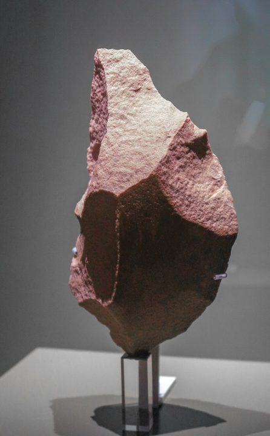

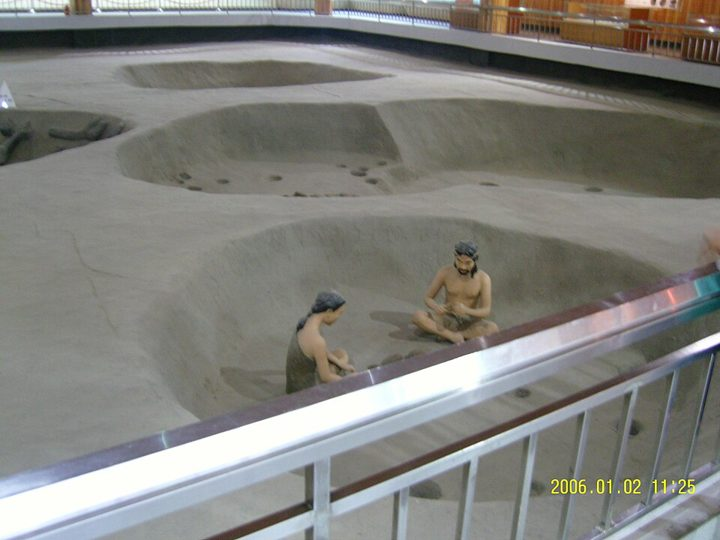

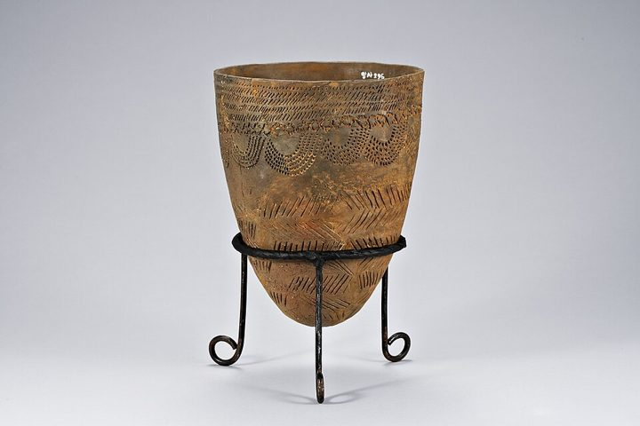

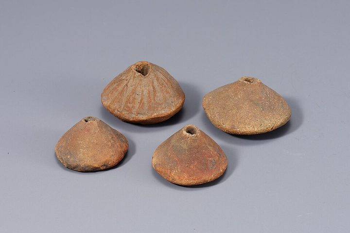

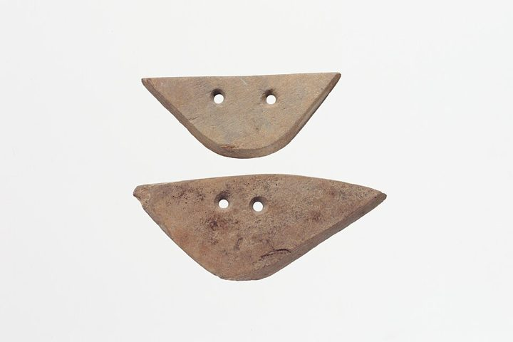

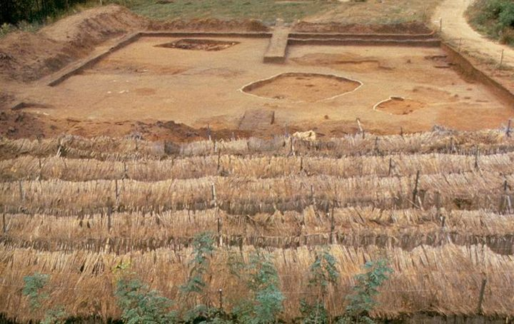

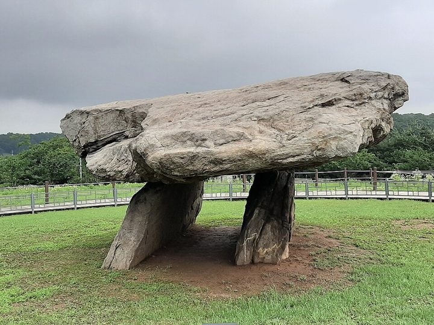

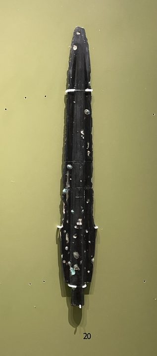
02고조선
- 청동기를 배경으로 단군왕검이 세운 우리 역사상 최초의 국가. 지난 시험에 안 나와서 이번에 비중이 있다고 했어요.
- 문제 유형은 전체 문제 또는 순서 문제예요.
순서 문제: 단군 조선 → 위만 조선
단군 조선(연과 대등, 연의 침입으로 2천 리 상실)→위만의 정변(준왕을 몰아냄)→위만 조선(철기·중계 무역·임둔 진번 복속)→한 무제 침입(1차 방어, 2차 패배)→우거왕 피살→왕검성 함락→한 군현 설치
- 단군 조선: 전국 시대 연나라와 대등했지만 연의 침입으로 2천 리 땅을 빼앗겼어요(연 장수 진개 (보충)).
- 위만 조선: 발달한 철기로 임둔·진번을 복속하고, 한과 남쪽 진 사이의 중계 무역을 독점해요. 이게 한 무제가 공격한 원인이에요.
- 멸망 선지 키워드: 마지막 왕 우거왕의 피살, 왕검성 함락, 이후 한 군현 설치. 이때 범금 8조가 60여 조로 늘어났어요.
전체 문제 정답으로 잘 나오는 것 정답 단골
- 상·대부·장군 같은 관료 조직
- 범금 8조(시험에서는 8조법을 이렇게 써요. 8조법 사료는 괜찮대요.)
- 참성단, 개천절 같은 기타 선지도 모두 고조선과 관련돼 있어요.
03여러 나라의 성장(초기 국가)
- 옥저가 안 나온 지 15회 차가 넘어 출제 가능성이 있어요. 지난 시험(80회)은 고구려가 나왔어요.
- 가장 쉬운 정답은 제천 행사: 부여 영고(12월), 고구려 동맹, 동예 무천, 삼한 계절제(5월·10월). 옥저는 기록이 없어요.
- 위치: 제일 위쪽 부여(송화강 평야) → 압록강 상류 고구려 → 동해안 옥저·동예 → 남쪽 삼한(마한·진한·변한).
| 나라 | 핵심 특징 |
|---|---|
| 부여 | 송화강 평야, 동쪽 나라 가운데 가장 넓고 평탄한 곳. 영고(12월). 왕 아래 마가·우가·저가·구가가 사출도를 다스리는 연맹 왕국. 농사가 안 되거나 전쟁에 지면 왕에게 책임을 물어 교체하거나 죽여요. |
| 고구려 | 부여와 비슷하지만 차이에 주목. 약탈 경제의 증거 부경(창고), 제천 행사 동맹, 혼인 풍습 서옥제(남자가 여자 집에 작은 집을 짓고 사는 풍습). 부여는 생산 경제. |
| 옥저 유력 | 왕이 없고 읍군·삼로가 다스려요(옥저·동예 공통). 두 개만 보면 돼요: 민며느리제(어린 여자아이를 데려다 길러 아내로 삼음)와 가족 공동 무덤(가족의 뼈를 한곳에 모음). 둘 중 하나가 정답으로 나온다고 했어요. |
| 동예 | 제천 행사 무천. 책화(다른 부족 영역을 침범하면 변상, 동물 '선 넘지 마'). 특산물 단궁·과하마·반어피. 읍군·삼로. |
| 삼한 | 마한·진한·변한. 지배자 신지·읍차, 제사장 천군이 다스리는 소도(제정 분리의 증거). 5월·10월 계절제. 변한은 철(덩이쇠)을 낙랑·왜에 수출 → 나중에 가야. |
04가야
- 지난 회차에 안 나왔으니 대비해야 해요. 어렵게 내지는 않는다고 했어요.
- 연맹 왕국이에요. 전기는 금관가야, 후기는 대가야가 이끌었어요. 주도권이 넘어가는 계기는 400년 광개토 대왕의 신라 구원이에요(금관가야는 망하지는 않고 위축).
- 두 나라 비교(전체 문제로 나와요):
| 금관가야 | 대가야 | |
|---|---|---|
| 위치 | 김해 대성동 | 고령 지산동 |
| 시조 | 김수로(하늘에서 내려온 알 여섯 개 중 가장 먼저 나온 이가 왕) | 이진아시왕 |
| 멸망 | 6세기 법흥왕에게 | 6세기 진흥왕에게 |
- 6세기 신라 왕 세 명: 지증왕(지난 시험) → 법흥왕 → 진흥왕. 둘을 구별하는 문제는 아직 없었으니 "6세기 신라 법흥왕 또는 진흥왕에게 망했다"로 기억하면 돼요.
- 정답 단골변한에서 출발, 철(덩이쇠)을 낙랑·왜에 수출.
- 사진: 금동관(투박함), 철갑옷, 수레바퀴 장식 토기, 기마 인물형 뿔잔(신라 것과 비슷하니 주의).
사진으로 보기

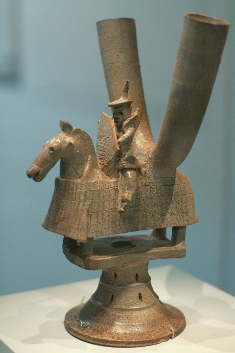
05삼국의 항쟁 ① 4·5·6세기
구도: 2~4세기는 세 나라의 기틀, 4~6세기가 전성기(백제→고구려→신라). 5세기까지는 고구려 중심으로 보세요. 이렇게 서로 싸울 수 있었던 이유는 중국이 분열기(위진 남북조)였기 때문이고, 6세기 말 수나라가 통일하면서 판이 바뀌어요.
- 4·5·6세기에서 한 문제가 나와요(지난 시험은 지증왕). 이번에는 고구려 쪽에 조금 더 중점을 두라고 했어요. 고구려를 안 낸 지 좀 됐대요.
- 2·3세기는 안 봐도 되지만 하나만: 고구려 진대법(춘대추납) → 고려 태조 흑창 → 성종 때 의창.
4세기: 미천왕 → 고국원왕 → 소수림왕 / 백제 근초고왕
- 미천왕: 낙랑 축출. 고국원왕: 평양성에서 근초고왕의 공격으로 전사(유시에 맞아 숨짐) A급
- 근초고왕(백제 전성기): 평양성 공격으로 고국원왕 전사, 배를 타고 요서·산둥·일본 규슈 진출, 증거는 칠지도, 역사서 『서기』(고흥).
- 소수림왕은 불·태·율(불교·태학·율령) 3종 세트. 불교는 고구려가 전진의 순도, 백제가 동진의 마라난타(침류왕).
5세기: 고구려 전성기 (고구려 중점)
- 광개토 대왕(담덕): 연호 영락 정답 단골, 만주 벌판 정복(후연·비려·숙신), 요동 진출, 400년 신라 구원(내물 마립간을 도움). 증거는 신라 고분에서 나온 호우명 그릇.
- 장수왕(거련): ① 평양 천도(남진 정책) → 백제·신라 나제 동맹 ② 한성 함락, 개로왕 전사 A급. 바둑 잘 두는 승려 도림을 첩자로 보냈고, 개로왕은 북위에 군사 도움을 청하는 국서를 보냈어요.
- 백제 왕 순서 암기: 비·계·문·동(비유왕·개로왕·문주왕·동성왕). 문주왕은 웅진 천도, 동성왕은 신라 소지 마립간과 결혼 동맹.
6세기: 고구려는 생략, 백제·신라 다섯 명
- 6세기 고구려는 안 봐도 돼요(귀족 분열기). 무령왕, 성왕, 지증왕, 법흥왕, 진흥왕 다섯 명 모두 단독 문제 급이에요.
- 무령왕: 정답은 늘 22담로(지방에 왕족 파견). 벽돌 무덤(송산리 고분군, 중국 남조 양과 교류), 돌짐승 진묘수.
- 성왕: 사비 천도, 국호 남부여. 한강 유역을 잠깐 장악했으나 진흥왕의 배신으로 빼앗겼고, 무리하게 나섰다가 관산성 전투에서 전사 A급(사료는 '구천' 키워드 판과 '김무력·고도' 판 두 가지).
- 죽은 왕 세트 ★ 고국원왕(근초고왕이 가해자) → 개로왕(장수왕) → 성왕(관산성). 순서 배열에 아주 잘 나와요.
- 지증왕(지난 시험): 국호 사로→신라, 마립간→왕, 우산국 정복(이사부), 우경, 동시전, 순장 금지.
- 법흥왕: 법·병·불 = 율령·병부와 상대등·불교 공인(이차돈의 순교). 연호 건원, 금관가야 멸망.
- 진흥왕: 화랑도를 국가 조직으로 개편, 황룡사, 역사서 『국사』(거칠부), 연호 대창 (보충), 대가야 멸망, 단양 적성비와 순수비 네 개(그중 북한산비는 김정희가 고증).
사진으로 보기

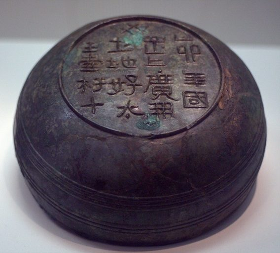

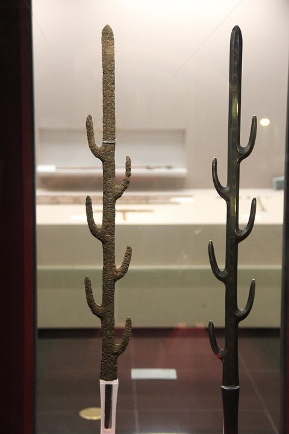

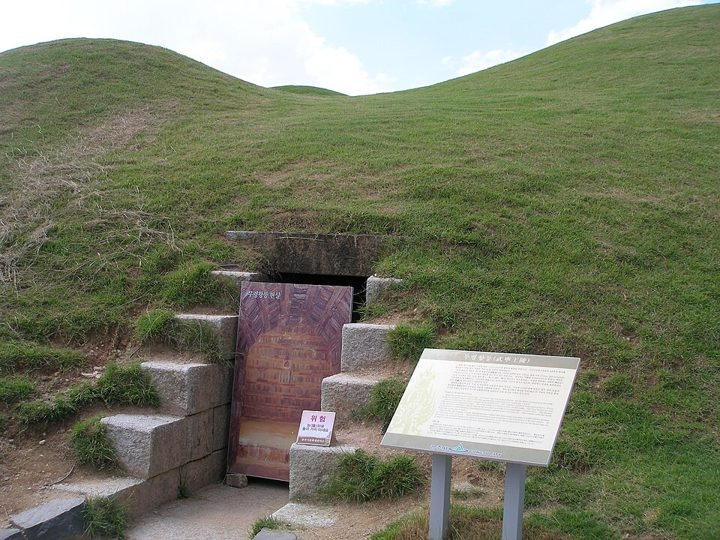

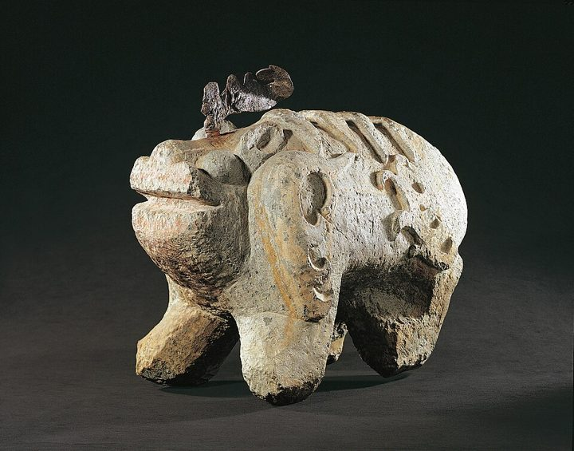

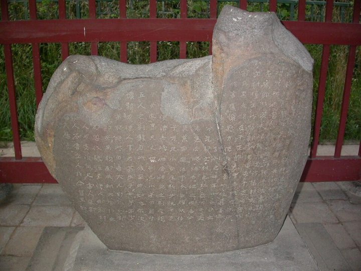

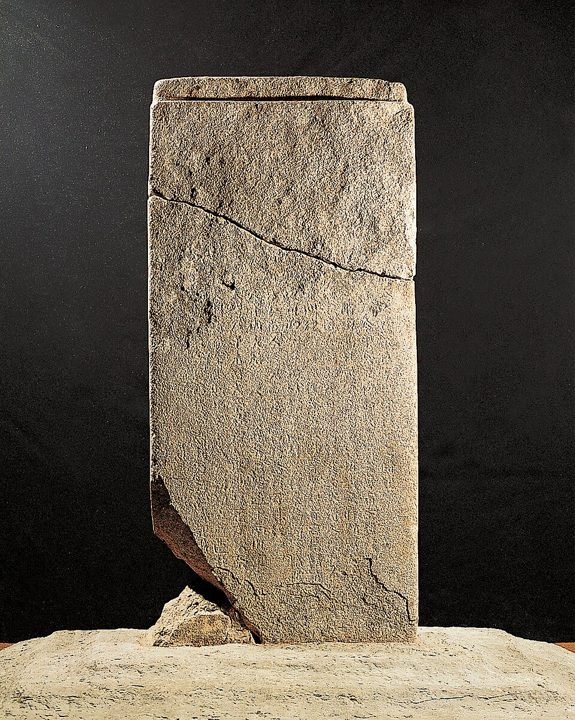
06삼국의 항쟁 ② 7세기: 수·당 전쟁에서 통일 전쟁까지
- 6세기 말 수나라, 7세기 초 당나라를 묶어서 한 문제가 나와요. 범위가 어디까지일지 모르니 "다음 사이, 이후"까지 한꺼번에 대비하라고 했어요.
수 문제 침입→수 양제 대규모 침입, 612 살수 대첩(을지문덕·우중문)→수 멸망, 당 건국→천리장성 축조(감독 연개소문)→연개소문 정변→(대야성 전투)→645 안시성 전투→648 나당 동맹
- 살수 대첩 사료에서 을지문덕이 "만족하고 그만두길 바란다"고 해요. 연개소문 키워드는 대막리지이고, 정변 뒤 귀족을 누르고 불교를 억누르며 도교를 띄웠어요.
- 안시성(645) 다음이 나당 동맹(648)이라 고민할 필요 없어요. 조금 어렵게 내면 안시성 앞에 대야성 전투(642 (보충))가 나와요.
통일 전쟁: 다섯 포인트
- 나당 동맹 체결 → 백제 멸망: 황산벌 전투(김유신 vs 계백), 의자왕 항복. 종결은 취리산 회맹(이름은 몰라도 괜찮음).
- 백제 부흥 운동 잘 나옴: 복신·도침·흑치상지, 왜 수군이 지원, 백강 전투.
- 고구려 멸망(보장왕) → 고구려 부흥 운동: 검모잠·고연무·안승. 신라는 당을 견제하려고 부흥 운동을 도왔어요.
- 나당 전쟁: 당이 한반도를 다 차지하려 하자 신라가 몰아낸 마지막 전투 매소성 전투, 기벌포 전투 → 삼국 통일.
07통일 신라
- 지난 시험에는 신문왕과 신라 말 사회상(선종)이 나왔어요. 이번에는 신문왕을 뺀 나머지 왕과 신라 하대로 넘어가는 순서를 보라고 했어요. 성덕왕·경덕왕은 최근 선지가 나오기 시작했어요.
상대(성골) 선덕·진덕 여왕→중대 시작 태종 무열왕(최초 진골)→문무왕→신문왕→성덕왕→경덕왕→혜공왕 피살→하대
중대의 왕들
- 문무왕: 정답은 거의 외사정(지방 감찰관 파견). 유언으로 바다에 묻힌 대왕암. 감은사는 문무왕이 시작하고 신문왕이 완공했어요.
- 신문왕(지난 시험 출제): 김흠돌의 난 진압 → 관료전 지급·녹읍 폐지, 9주 5소경, 9서당 10정, 교육 기관 국학(지난 시험 정답), 감은사 완공, 만파식적. 아들 효소왕 때 서시·남시가 추가로 설치돼요(통일 신라 선지).
- 성덕왕: 백성에게 토지를 주는 정전 지급. 경덕왕: 귀족이 고개를 들며 녹읍 부활, 하지만 문화적 전성기(불국사·석굴암).
- 혜공왕 피살: 김지정의 난을 진압하는 과정에서 왕이 죽었어요. 이후가 신라 하대예요.
하대: 중앙에서 지방으로, 전국으로 순서 유력
혜공왕 피살→김헌창의 난(웅천주)→장보고(청해진)→진성 여왕 때 전국적 농민 봉기(원종·애노, 적고적)
- 김헌창의 난: 아버지 김주원이 왕이 못 된 일로 웅천주(공주)에서 반란, 키워드 장안국. 장보고보다 먼저예요(순서 꼭 기억).
- 장보고: 당에서 군인으로 활동하다 귀국해 청해진(완도)을 설치, 삼각 무역, 당의 적산 법화원.
- 진성 여왕: 원종·애노의 난, 적고적, 향가집 『삼대목』(지금은 전하지 않음), 해인사 길상탑기, 최치원의 시무 10여 조.
- 최치원: 인물 단독 문제를 대비하라고 했어요. 6두품, 어린 나이에 당에 유학해 빈공과 급제, 황소의 난 때 격황소서로 이름을 떨침. 귀국해 진성 여왕에게 시무 10여 조를 건의했지만 받아들여지지 않아 은둔(해인사 등).
- 신라 말 사회상(지난 시험): 호족·6두품·선종 삼각형 + 풍수지리설(선종 승려 도선이 전함). 호족은 반독립적 지방 세력, 6두품은 유학, 선종은 '견성오도'.
사진으로 보기

08고대 문화 ① 사상
불교: 승려 4+1명
- 원효·의상이 A급이고 문무왕 때(통일 시기) 활동했어요. 그 앞에 원광·자장이 있고, 최근 시험이 기타 승려로 난도(3점)를 올리고 있어 대비해야 해요.
- 원광: 수나라에 군사를 청하는 걸사표, 화랑의 계율 세속 5계. 자장: 황룡사는 진흥왕, 황룡사 9층 목탑은 선덕 여왕 때 건의.
- 원효(6두품, 파계승): 당 유학을 포기, 요석 공주와 혼인해 설총을 낳음. 왕을 만나지 않고 백성에게 무애가를 부르며 포교. 키워드 일심·화쟁, 염불은 나무아미타불.
- 의상(진골, 엘리트): 당에 유학, 화엄종, 『화엄일승법계도』, 핵심 사찰 부석사(선묘 설화: 선묘가 용이 되어 돌이 떠서 절을 짓도록 도움). 염불은 관세음보살(관음 신앙). 단독 문제가 더 유력하다고 했어요.
- 혜초: 보통 틀린 선지지만 요즘 분위기라 단독으로 낼 수도 있어요(예전에 한 번 냈대요). 인도 기행문 『왕오천축국전』. 강사 표현으로 "지금 따지면 여행 유튜버".
- 신라 말 선종: 참선 수행, 견성오도·이심전심, 구산 선문.
유교·도교·풍수지리
- 강수(최근 시험 출제): 외교 문서에 능했고 청방인문표. 설총: 원효의 아들, 이두 정리, 화왕계(꽃의 왕 = 신문왕). 최치원은 앞 장 참고.
- 도교는 신선 사상, 불로장생, 산천 숭배. 거의 문화재로 나와요. 연개소문 정변 뒤 불교를 누르며 도교를 띄운 것도 연결해서 보세요. 유물: 강서대묘 사신도(현무도), 산수무늬 벽돌(무릉도원), 금동 대향로(부여 능산리, 백제, 불교+도교 → 시험은 도교로 냄).
- 풍수지리설: 신라 말 선종 승려 도선이 전래. 땅의 기운에 따라 인간의 화복이 달라진다.
사진으로 보기

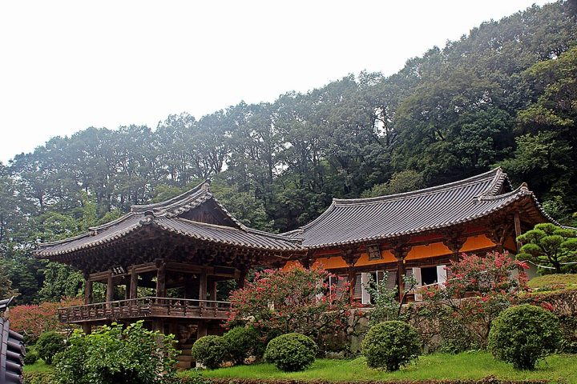

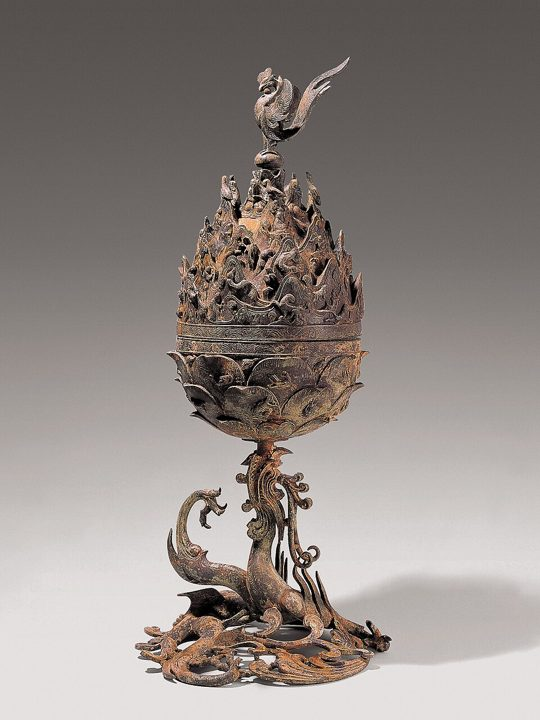

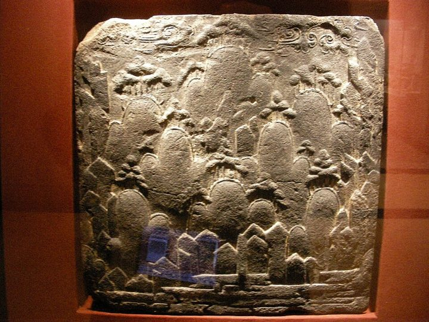
09고대 문화 ② 탑과 불상
- 한국 탑의 중심은 통일 신라의 이중 기단 3층 석탑이에요. 고려는 다각 다층 탑이라고 외우면 돼요.
| 시대 | 탑 | 외울 것 |
|---|---|---|
| 고구려 | (목탑) | 나무라서 남아 있는 게 없어요. |
| 백제 | 미륵사지 석탑 | 익산, 무왕 때. 복원 과정에서 발견된 기록에 왕비가 사택적덕의 딸이라고 나와요(미끄러지는 느낌). |
| 정림사지 5층 석탑 | 부여. 소정방이 백제 멸망을 새긴 평제탑. | |
| 신라 | 분황사 모전 석탑 | 벽돌 탑(전탑)을 모방한 석탑, 신라 탑 중 가장 오래됨. |
| 통일 신라 | 감은사지 3층 | 상륜부에 아무 장식 없음. 가장 이른 시기. |
| 불국사 3층(석가탑) 단골 | 장식이 붙어 있어요. 안에서 무구정광 대다라니경이 나왔어요. 단독 문제도 여러 번. (마주 보는 다보탑은 모양이 달라요.) | |
| 화엄사 4사자 3층 | 사자 네 마리가 탑을 이고 있어요. | |
| 진전사지 3층 | 시기가 뒤로 갈수록 복잡해져요. 탑신에 조각이 들어가요. |
- 신라 말에는 선종과 연결된 승탑(승려의 탑)이 만들어져요. 발해의 영광탑은 입구가 특징이에요(별표).
불상 ★
- 고구려 연가 7년명 금동 여래 입상(별표): 서 있는 부처, 광배가 특징. 발해의 이불병좌상(앉은 부처 두 분)과 비교하면 광배가 같아 영향을 받았어요.
- 백제: 서산 마애 삼존불(백제의 미소). 통일 신라: 석굴암 본존불.
사진으로 보기

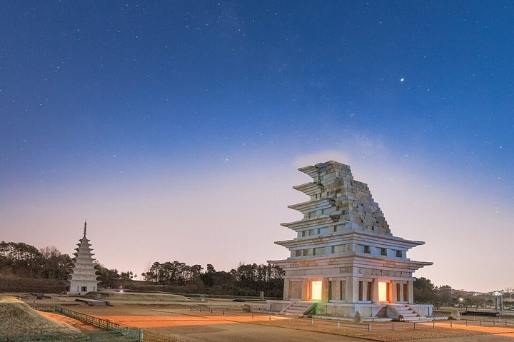

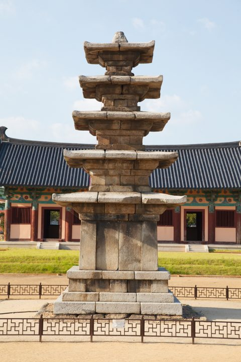

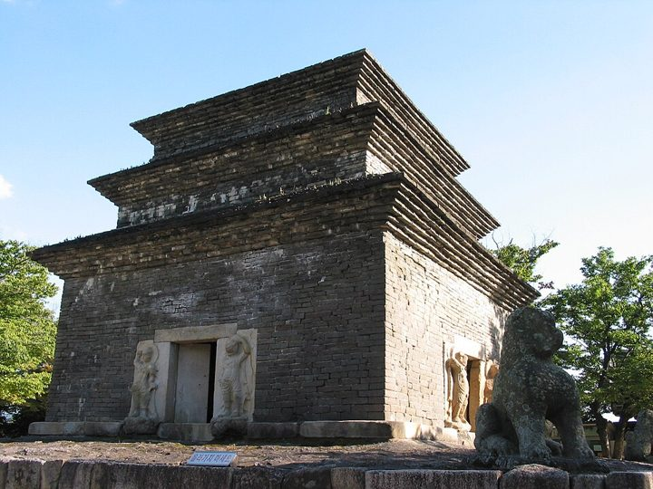

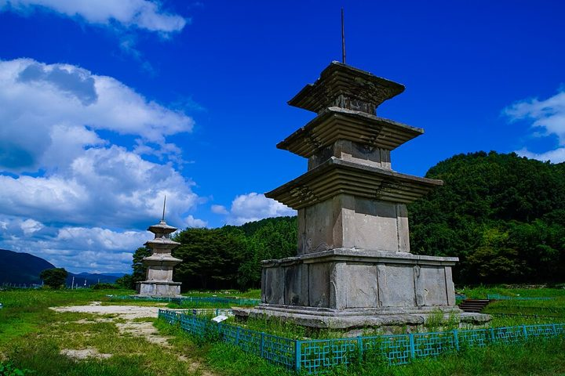

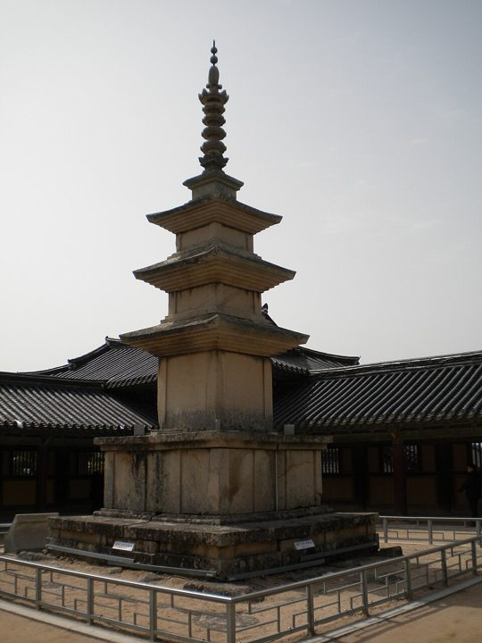

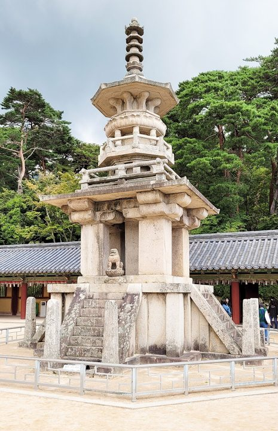

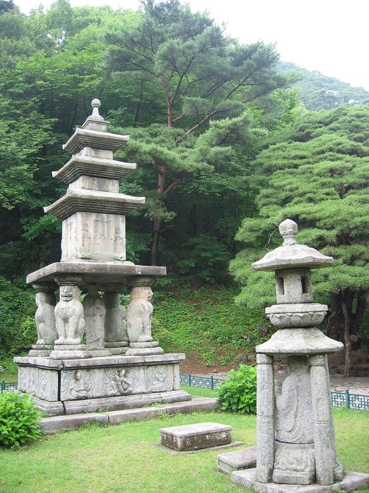

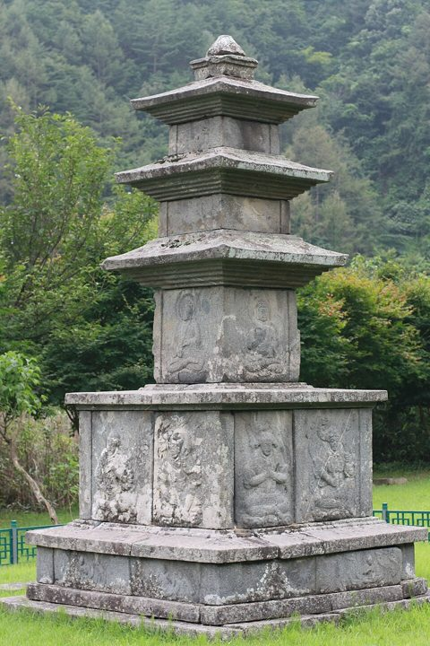

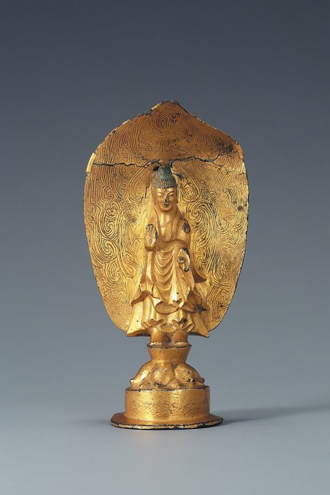

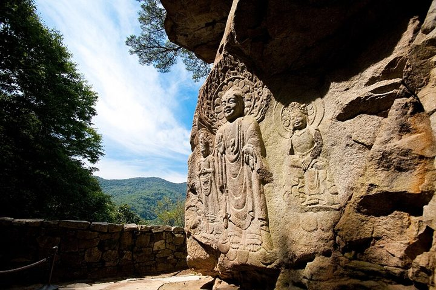

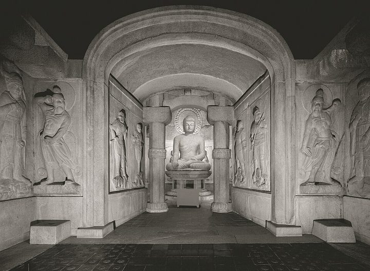
10고대 국가 문제(사진 + 제도 정리)
- 지난 시험에도 두 문제가 나왔어요. 위쪽에 사진을 줘서 나라를 묻고, 아래의 제도 정리를 정답으로 줘요. 무덤 양식을 자세히 공부하는 사람이 있는데 안 나와요. 이름만 알면 돼요.
| 사진·유물 | 제도 정리(정답으로 나오는 것) | |
|---|---|---|
| 고구려 | 장군총·안악 3호분·쌍영총, 연가 7년명 금동 여래 입상 ★, 호우명 그릇(신라와 겹침) | 제가 회의, 수상 대대로, 지방관 욕살, 부경, 진대법, 중앙 태학·지방 경당, 연호 영락 |
| 백제 | 한성 석촌동 고분, 웅진 무령왕릉(벽돌 무덤, 진묘수), 칠지도, 금동 대향로, 산수무늬 벽돌 | 정사암 회의, 수상 상좌평, 왕족 부여씨와 8성 귀족, 6좌평 |
| 신라 | 금관, 천마총 천마도(벽화가 아니라 말다래), 호우명 그릇 | 화백 회의, 상대등, 골품제(자세히는 안 냄), 화랑도 |
| 통일 신라 | 민정(촌락) 문서(청주 서원경 일대 네 개 촌), 서시·남시, 울산항, 청해진 | 9주 5소경, 9서당 10정, 신문왕 때 완성, 국학 |
백제 수도의 이동 ★ 한성 → 웅진 → 사비(→ 익산)
- 한성(서울): 온조가 도읍, 풍납토성·몽촌토성·석촌동 고분(잠실 쪽).
- 웅진(공주): 개로왕 전사 후 문주왕이 천도. 송산리 고분군(무령왕릉은 7호), 공산성. 글자 '공·송'으로 체크하면 편해요.
- 사비(부여): 성왕이 마지막으로 천도, 남부여. 능산리(금동 대향로), 부소산성, 관북리, 정림사지 5층 석탑.
- 익산: 미륵사지 석탑, 왕궁리 유적.
외우는 팁: 수도 순서는 한성→웅진→사비이고, 마지막으로 무왕이 금마저(익산)로 옮기려 했다는 점도 있어요 (보충).
사진으로 보기

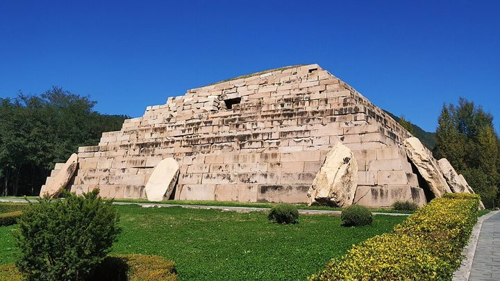

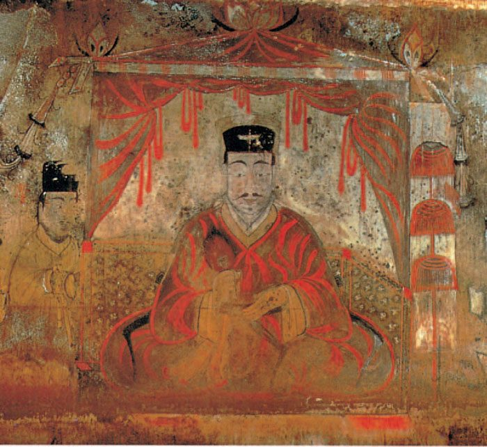

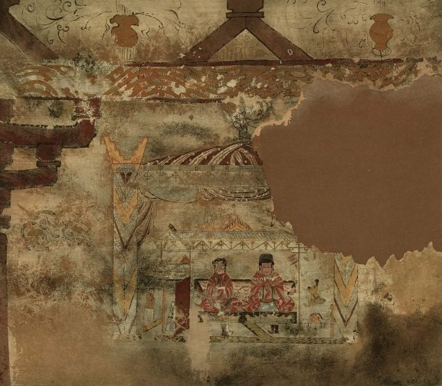

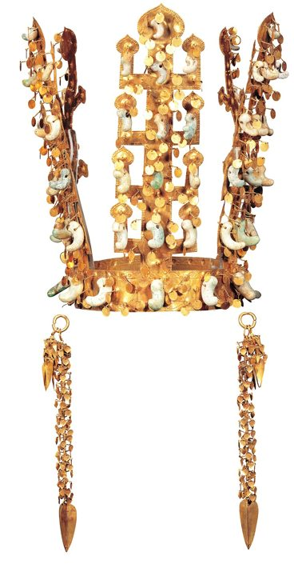
11발해
- 80회는 8번, 79회는 7번으로 나왔어요. 왕 이름보다 전체 국가 문제가 훨씬 많아요. 주문중(주자감·문적원·중정대)을 잘 대비하라고 했어요.
왕대사(가볍게)
- 고왕(대조영): 동모산 인근에서 건국. 무왕: 당을 공격(등주 공격, 장문휴). 문왕: 당과 친선, 제도 수용. 선왕: 전성기, 해동성국, 지방 제도 완성. 멸망: 거란에게.
전체 국가 문제 정답 단골
- 3성 6부: 정당성(장관 대내상이 국정 총괄), 선조성, 중대성. 6부 이름은 충·인·의·지·예·신.
- 주자감(대학), 문적원(서적 관리), 중정대(감찰) = 주·문·중
- 지방 제도: 5경 15부 62주. 황제국 표방: 칭호와 독자 연호.
- 사진·기타: 이불병좌상 ★, 영광탑 ★(입구가 특징), 큰 석등, 정혜·정효 공주 무덤(몇째 딸인지는 안 물어요), 기와. 교통로로 거란도·영주도 등이 나오면 발해로 보면 돼요.
- 당이 신라와 발해를 경쟁시킨 쟁장 사건(사신 자리다툼), 빈공과 등수 사건은 용어를 몰라도 '견제'로 이해하면 돼요.
고려후삼국 통일 ~ 공양왕 · 영상 ② 1:00:02~
12후삼국 통일 과정
- 문제 유형은 ① 인물(견훤·궁예) ② 순서 두 가지예요. 인물은 두 번 연속 나왔고(지난 시험 견훤, 그 전 시험 궁예), 이번에는 순서 문제에 더 무게를 두고 대비하라고 했어요.
구도: 신라는 통일 뒤 대동강~원산만 이남을 차지했어요. 후반으로 갈수록 왕의 힘이 경주 주변으로 줄어들고, 지방에서는 호족이 일어나요. 후백제(견훤)와 후고구려(궁예)의 건국은 1년 차이밖에 안 나지만, 지도에서 시계 방향으로 돌며 순서를 외워요.
인물 키워드
- 견훤(후백제): 도읍 완산주(전주). 초반 기세가 가장 좋았고 경제력이 탁월했어요. 중국(오월 등)과 교류했어요.
- 궁예(후고구려): 광평성(관제)을 가장 잘 내요. 도읍은 송악 → 철원이고 국호는 태봉이에요. 궁예를 밀어내고 왕건이 왕이 되어 고려가 세워져요.
순서 (발해 멸망이 기준점)
후백제 건국(견훤)→후고구려 건국(궁예)→고려 건국(왕건)→발해 멸망(거란)→경애왕의 죽음(견훤의 신라 침입)→공산 전투(왕건 패배, 신숭겸 전사)→고창 전투(왕건 승리)→견훤 귀순, 경순왕 항복→일리천 전투(후백제 멸망)
- 발해 멸망 이후가 핵심이라고 했어요(시험에서 이 구간이 가장 중요). 암기 약칭은 애·공·고·경·일이에요.
- 견훤이 아들에게 쫓겨나 금산사에 갇혔다가 탈출해 왕건에게 귀순했어요. 이를 본 경순왕이 끝까지 버티다 항복했고, 마지막 전투는 선산 일리천 전투예요.
- 공산 전투에서는 왕건을 대신해 신숭겸이 죽었어요.
13고려 초기 왕의 업적
고려는 지배 계층에 따라 시기를 다섯으로 나눠요. 호족 → 문벌 귀족 → 무신 → 권문세족 → 신진 사대부(앞 글자로 호·문·무·권·신). 무신 집권기 뒤에 약 40년 몽골과 싸운 시기(대몽 항쟁기)가 오고, 이어 원 간섭기가 와요.
- 지난 시험은 성종, 그 전 시험은 현종이 나왔어요. 이번에는 태조 가능성이 높고, 오랜만에 문종~예종·인종(문숙예인) 파트도 낼 수 있다고 했어요.
- 순서는 태·혜·정·광·경·성·목·현(태조 → 혜종 → 정종 → 광종 → 경종 → 성종 → 목종 → 현종)이에요. 태조 사후 바닥까지 떨어진 왕권을 광종이 끌어올리고 성종이 체제를 완성해요. 중기 전성기는 문종이에요.
태조
- 고려 건국, 후삼국 통일, 연호 천수. 호족 통합 정책으로 기인 제도(인질)와 사심관 제도(1호 사심관이 경순왕)를 썼어요.
- 흑창(진대법을 이은 빈민 구제 기구, 성종 때 의창으로 발전) ★ 신하에게는 통일 공로에 따라 역분전을 줬어요.
- 후대 왕에게 훈요 10조, 신하에게 정계·계백료서를 남겼어요. 거란이 보낸 낙타를 굶겨 죽인 만부교 사건도 있어요(대외 관계에서도 나와요).
- 왕건의 상에서 황제를 상징하는 통천관을 쓴 모습이 발견돼 이런 자료가 문제에 나온 적이 있어요.
혜종·정종·광종·경종
- 혜종 때는 왕권이 불안해 왕규의 난이 있었고, 이를 진압하고 즉위한 정종은 거란에 대비한 광군을 만들었어요.
- 광종(누가 봐도 왕권 강화): 과거제(후주 출신 쌍기의 건의), 공복 제도, 연호 광덕·준풍, 노비안검법. 성종 때 최승로의 건의로 나온 노비환천법과 비교해서 외워요.
- 경종 → 성종 → 목종 사이에 전시과가 3단으로 변해요: 경종 시정 전시과 → 목종 개정 전시과 → 중기 문종 경정 전시과.
성종·목종·현종
- 성종: 중요한 건 최승로예요. 시무 28조(5조는 실전)로 12목에 지방관 파견을 건의했고 안검법을 비판했어요. 제도는 모두 성종 때 정비: 2성 6부, 중추원, 어사대 (보충), 의창·상평창, 대학교 국자감. 거란의 1차 침입도 성종 때예요.
- 목종: 개정 전시과.
- 현종: 강조의 정변(목종을 폐하고 현종 즉위), 거란의 2·3차 침입, 부처의 힘으로 나라를 지키려고 초조대장경 조판을 시작했어요(완성 시점은 안 내요). 최근 사료에 7대 실록이 나와 선지로도 낼 수 있어요.
14거란·여진과의 전쟁
- 고려의 대외 관계는 끊임없이 출제되고, 지난 시험도 거란을 냈어요. 거란은 거의 상수로 봐야 하고, 순서를 확인할 수 있어야 해요.
거란: 태조 → 정종 → 성종(1차) → 현종(2·3차)
| 시기 | 핵심 |
|---|---|
| 태조 | 만부교 사건: 거란이 보낸 낙타를 굶겨 죽이고 사신을 귀양 보냈어요. |
| 정종 | 광군 조직 |
| 성종 · 1차 | 지휘관 소손녕이 침입했고 서희가 담판(말싸움)으로 해결, 그 결과 강동 6주를 얻었어요. 군사적 싸움이 아닌 외교 담판이에요. |
| 현종 · 2차 | 강조의 정변을 구실로 침입. 흥화진에서 양규가 항전했고, 현종이 나주까지 피란했어요. 강화 조건은 현종의 친조였지만 가지 않았어요. |
| 현종 · 3차 | 강감찬이 귀주 대첩에서 크게 이겼어요(낙성대). |
- 3차 이후 결과: 수도 개경을 둘러싼 나성, 국경에 쌓은 천리장성, 초조대장경과 7대 실록.
여진: 숙종 → 예종 → 인종
여진이 세력 통합→윤관 출정, 숙종 때 별무반→예종 때 동북 9성→예종 때 9성 반환→금 건국, 사대 요구→이자겸의 수용(인종)
- 별무반(숙종): 여진이 기병으로 이긴 걸 보고 만든 부대예요. 기병 신기군, 보병 신보군, 승병 항마군. 동북 9성과 반환은 모두 예종이에요.
- 금이 요를 무너뜨리고 강해져 "군신 관계를 맺자"고 하자 이자겸이 받아들였어요. 이게 고려 사회 변질의 확정이라고 해요.
15문벌 귀족 사회와 문숙예인
초기 호족은 자주적·개혁적이었다면, 성종 이후 문벌 귀족은 보수적이고 뒤로 갈수록 더 보수화돼요. 이 모순이 이자겸의 난 → 묘청의 난으로 터지고, 그래도 해결이 안 돼 사회가 뒤집힌 게 무신 정변(1170)이에요.
- 문벌 귀족의 특권: 음서(과거 없이 관직), 공음전(세습되는 토지).
이자겸의 난 → 묘청의 난 → 삼국사기 순서 유력
이자겸의 난(척준경과 함께)→이자겸 제거(척준경 회유)→척준경 제거→묘청의 서경 천도 운동→김부식이 진압→삼국사기 편찬→무신 정변(1170)
- 이 파트는 순서 문제로 가장 자주 나오고, 김부식·삼국사기 인물·역사서 문제도 가능하다고 했어요.
- 이자겸의 난을 진압하는 과정에서 궁궐이 불타 묘청이 서경 천도를 주장했어요(개경파 vs 서경파). 인종이 마음을 바꾸자 묘청이 난을 일으켰고, 국호 대위국, 연호 천개를 썼어요. 진압한 김부식이 왕명으로 삼국사기(기전체)를 편찬해요.
이번 시험 유력문숙예인 (문종·숙종·예종·인종)
- 관학 진흥책과 학문 기관 쪽은 안 나온 지 꽤 돼서 3점짜리로 나올 가능성이 높다고 했어요.
- 정치사: 별무반은 숙종, 동북 9성·반환은 예종, 이후 인종 때 이자겸의 난·묘청의 난·삼국사기.
- 최충(문종): 해동공자라 불린 고려 최고 학자로 은퇴 후 학원을 열었어요(문헌공도, 9재 학당). 과거 출제자가 학원을 차리니 합격자가 다 거기서 나와 국자감이 위축돼 관학 진흥책이 필요했어요.
- 숙종: 서적포, 의천의 건의로 주전도감(동전 주조). 예종: 양현고(장학 재단), 7재(국학), 청연각·보문각(학문 연구소).
16무신 집권기
- 지난 시험은 최충헌을 "다음 사이" 형태로 냈어요. 이번에는 최충헌·최우 인물 문제(가볍게), 또는 정중부 때의 난까지 섞은 디테일한 순서로 나올 수 있다고 했어요.
- 최고 권력자를 기준으로 순서를 먼저 외워요: 정중부 → 경대승 → 이의민 → 최충헌 → 최우. 중요한 건 최충헌과 최우예요.
권력·군사 기반 (정답 선지가 많은 곳) 정답 단골
| 인물 | 권력 기구·군사 기반 |
|---|---|
| 정중부 | 중방(무신 회의) |
| 경대승 | 도방(사병 기관, 사후 사라짐) |
| 최충헌 | 교정도감(최고 권력 기구), 도방 부활. 이의민을 제거하고 봉사 10조를 올렸어요. |
| 최우 | 정방(인사), 서방(문신 숙직·이규보 등), 몽골 1차 침입 후 화의→강화 천도, 야간 치안 야별초 → 좌별초·우별초·신의군을 합쳐 삼별초, 몽골 항쟁 중 재조대장경(팔만대장경) 조판 |
전국적 봉기와 민란
- 전근대사에서 전국적 봉기는 세 시기예요. ① 9세기 말 진성 여왕 때(원종·애노, 적고적) ② 무신 집권기 ③ (뒤에 나오는 조선 후기).
- 정중부 때: 김보당의 난 → 조위총의 난(서경) → 교종 승려의 난 → 망이·망소이의 난(공주 명학소, 소는 특수 행정 구역). 이의민 때: 김사미·효심의 난(연합). 최충헌 때: 만적의 난("왕후장상의 씨가 따로 있겠는가").
이규보
- 서방에서 활동한 문인으로 동명왕편(주몽 건국 이야기)을 썼어요. 문집은 『동국이상국집』이에요. 문화사에서 한 줄씩 나와요.
17몽골의 침입과 삼별초 항쟁
- 무신 집권기 100년 뒤 약 40년을 몽골과 싸워요. 대몽 항쟁은 최근에 출제가 적어서 가능성이 꽤 높다고 했어요.
- 첫 만남은 거란을 함께 몰아낸 강동성 전투(고려·몽골 연합으로 거란군 토벌, 이후 형제 맹약 (보충))였고, 몽골 사신 저고여 피살 사건을 구실로 침입해요.
- 강화 천도 이전·이후가 구별 포인트예요. 1차 침입 때 귀주성에서 박서가 맞섰고(귀주 대첩과 헷갈리지 말 것), 이후 화의 → 최우의 강화 천도.
- 천도 이후: 김윤후(처인성, 충주성에서 노비 문서를 불태우며 독려), 송문주(죽주성). 마지막에 팔만대장경(재조대장경) 판이 8만 판이 넘어요. 강화 천도에서 항전했다는 서술과 김윤후가 정답으로 잘 나와요.
삼별초 항쟁
개경 환도(1270)에 반발→강화도(왕족 온을 왕으로 추대)→진도 용장성(배중손)→제주도 항파두리(김통정)
- 삼별초는 최씨 정권의 군사 기반이에요. 몽골과 화의하고 개경으로 돌아가자 반기를 들어 강화 → 진도 → 제주로 옮기며 약 3년 버텼어요. 용장성, 배중손, 항파두리, 김통정이 나오면 삼별초예요.
18원 간섭기와 공민왕
- 원 간섭기는 무조건 한 문제 나와요. 지난 시험은 사회상이었으니, 이번에는 공민왕 왕대사가 더 유력하다고 했어요.
- 앞부분 복습 흐름: 후삼국 통일(순서) → 초기 왕(태조·광종·성종) → 거란(순서) → 여진·금·이자겸 → 묘청·삼국사기 → 무신 정변(1170~1270) → 몽골.
충렬왕·충선왕 (단독 문제는 아니고 기준점)
- 충렬왕: 원의 공주와 혼인해 부마국이 됐고 관제가 격하됐어요. 일본 원정에 동원되는 정동행성이 설치됐는데 공민왕이 없애요. 역사서 『삼국유사』·『제왕운기』가 이 시기예요.
- 충선왕: 왕위에서 물러난 뒤 원에서 만권당을 세워 학문 교류. 이때 이제현이 활약했고 훗날 공민왕 때까지 살아남아 『사략』을 썼어요. 요즘 시험이 이런 사이드 인물을 내는 변화가 보여요.
원 간섭기 사회상 빈출
- 지배 세력 권문세족: 친원파, 불교, 넓은 농장과 노비. 땅을 빼앗긴 백성을 풀어 주려 전민변정도감이 설치돼요.
- 도병마사가 도평의사사로 바뀌었어요(원 간섭기 키워드).
- 변발·호복 같은 몽골풍(쉬워도 정답으로 제일 잘 나와요). 공녀를 피하려는 조혼, 매 징발을 맡은 응방, 원의 농서 농상집요 수입.
이번 시험 유력공민왕 (3단 구조)
① 반원 정책→② 홍건적 침입 위기→③ 신돈 등용 개혁
- ① 반원 정책: 몽골풍과 원의 연호 폐지, 관제 복구, 정동행성 이문소 폐지, 친원파 기철 숙청, 쌍성총관부 수복(원이 차지했던 쌍성총관부·동녕부·탐라총관부 중).
- ② 위기: 홍건적 1·2차 침입(개경 함락, 왕이 안동 복주까지 피란). 개경에 돌아와 머문 흥왕사에서 김용이 왕을 해치려 한 흥왕사의 변.
- ③ 신돈 개혁: 아무도 못 믿게 되어 신돈과 개혁. 전민변정도감 재설치, 성균관 중영(이때 활약한 인물이 이색). 이색은 최근 단독 문제가 나왔어요.
- 공민왕은 A급 단독 문제 유력, 우왕까지 같이 보라고 했어요.
우왕·창왕·공양왕
- 우왕: 현존 세계 최고 금속 활자 인쇄본 직지심체요절(청주 흥덕사, 현재 프랑스 소장, 최근 잘 나와요). 왜구 격퇴 4곳: 홍산(최영)·진포(최무선, 화포)·황산(이성계)·관음포(정지). 이어서 요동 정벌 → 위화도 회군.
- 창왕: 쓰시마 정벌(이후 조선 세종 때 이종무의 대마도 정벌과 구별). 공양왕: 조선 건국 1년 전 과전법.
19고려 문화 ① 불교와 역사서
- 문화사 비중이 원래 50%였는데 최근 더 늘었고, 사이드 승려와 사이드 책을 건드려요. 지난 시험에는 요세가 나왔는데 20회 동안 낸 적이 없었어요(이런 변화에 주의).
불교
- 균여(광종 때 귀법사 주지, 화엄): 향가 보현십원가를 썼어요. 지금까지는 틀린 선지로만 나왔지만 이번에는 가능하다고 했어요. 초기 불교는 광종에게 몰려 있고, 은진미륵(대형 불상)도 광종 때 추정이에요.
- 의천(문종의 넷째 아들 왕후, 숙종 때 활동): 송에 유학, 천태종으로 교종 중심 선종 통합, 수행법 교관겸수. 동아시아 경전의 주석서 목록 『신편제종교장총록』으로 속장경(교장)을 간행했어요. 형 숙종에게 주전도감을 건의해 은병(활구)·해동통보·해동중보·삼한통보가 쏟아졌어요. 의천 사후 분열.
- 지눌(대각국사 의천과 쌍벽, 보조국사): 선종 중심으로 교종 통합 → 조계종. 수행법 돈오점수·정혜쌍수. 승려 본래 모습으로 돌아가자며 순천 송광사에서 수선사 결사.
- 혜심(지눌의 제자, 수선사 2대): 과거 합격 후 출가. 유불 일치설. 『선문염송』.
- 요세(지난 시험 출제): 지눌에 대항해 강진 만덕사에서 백련 결사. 반성이 먼저라며 참회를 강조하는 법화 신앙.
- 정리: 의천(교관겸수)과 지눌(돈오점수·정혜쌍수)이 빈도가 가장 높고, 앞으로는 균여도 챙기라고 했어요.
역사서 (시기별로 외우기)
- 삼국사기(인종 명을 받은 김부식, 묘청 진압 후): 기전체 인물 중심, 현존 최고 역사서, 유교적 합리주의. 원사료를 주면 "옛 기록이 거칠고 졸렬해서, 해와 별처럼 빛나게 만든다"는 취지의 서문이 나올 수 있어요(최근 원사료를 더 내고 있어요).
- 무신 집권기: 동명왕편(이규보, 한 줄 출제), 해동고승전(각훈, 우리나라 승려 전기, 한 줄 출제).
- 고려의 계승 의식 흐름: 초기 고구려 계승(거란과 싸움) → 여진에게 위축되며 신라 계승 → 무신 정변 후 다시 고구려 계승(동명왕편) → 원 간섭기에는 삼국의 구분이 무의미해져 단군 이야기(삼국유사, 제왕운기).
20고려 문화 ② 역사서 마무리·공예·탑·불상·건축
원 간섭기 역사서
- 삼국유사(일연): 불교사 중심, 민간 설화 수록, 불교적 신이사관(신령하고 이상한 이야기). 고조선(단군) 건국 이야기 수록 정답 단골
- 제왕운기(이승휴): 제(황제)=중국 역사, 왕=우리 역사라는 뜻의 이름. 중국사와 우리 역사를 7언시·5언시로 서술하고 단군 건국 이야기 수록(나온 지 얼마 안 됨). 둘 다 충렬왕 때이고 이때 안향이 성리학을 처음 소개했어요.
- 사략(이제현): 충선왕 때 만권당에서 활동했고 공민왕 때까지 살아남아 썼어요.
공예·그림 (사진을 주고 시대를 묻는 문제)
- 순수 비색 청자 → 상감 청자(도자기를 파내고 다른 색 흙을 채움). 송나라 사신 서긍이 『고려도경』에서 고려 청자를 칭찬한 내용은 지난 시험에도 나왔어요. 같은 원리의 나전칠기(자개), 청동 은입사(파고 은을 채움)도 고려예요.
- 그림: 양류관음도·수월관음도(화려한 불화), 공민왕이 변발하고 사냥하는 천산대렵도(전칭). 모두 고려로 묶어요. 수업 자료의 회색 박스는 오답으로 나올 틀린 시대 사진이에요.
탑: 고려는 다각다층 정답 단골
- 통일 신라는 이중 기단 3층, 고려는 그보다 높고 각이 많은 다각다층(층 수를 세지 말고 느낌으로 구별).
- 전기 월정사 팔각 9층 석탑(평창, 송의 영향) / 후기 경천사지 10층 석탑(원의 영향, 국립중앙박물관 로비) → 조선 세조 때 원각사지 10층 석탑이 이를 이어받아요. 세 사진은 꼭 보라고 했어요.
불상: 호족의 영향으로 개성이 강함
- 관촉사 석조 미륵보살 입상(은진미륵, 논산): 머리와 모자가 너무 큰 대두불. 가장 잘 나와요.
- 파주 용미리 마애이불입상, 안동 이천동 마애여래입상: 바위에 머리만 얹은 모양.
- 하남 하사창동 철조 석가여래 좌상: 소재가 특이한 철불.
- 예외: 부석사 소조 아미타여래 좌상은 신라 양식을 계승한 정상적인 모습이에요. 이 하나만 빼고는 모양·크기·소재가 특이하다고 외워요.
건축: 사진보다 이름 정답 단골
- 주심포: 봉·부·수 = 안동 봉정사 극락전(현존하는 가장 오래된 목조 건축물), 영주 부석사 무량수전, 예산 수덕사 대웅전. 다포는 응진전(황해도 성불사 (보충)). 암기 약칭은 봉·부·수·응이에요. 옆에 나온 조선 건축은 오답용이에요.
21고려의 국가 문제
시험은 위쪽에 사진·자료를 주고 "다음 국가는?"을 묻는 식이라, 키워드를 듣고 "이건 고려"임을 알아채면 돼요. 가장 쉬운 암기는 고·소·영(고려의 소, 관영점)이에요. 지난 시험도 이걸로 끝났어요.
경제·사회
- 소: 특수 행정 구역, 차별받는 양민이 사는 곳(공주 명학소, 충주 다인철소). 고려에만 있어요. 관영점: 국가가 운영한 가게 ★
- 상업·화폐: 시전과 감독 관청 경시서(조선은 평시서라 오답). 은병(활구), 해동통보 등 화폐. 개경 옆 예성강 하구 벽란도(아라비아 상인까지 왕래).
- 사회 제도(고려 ↔ 조선 비교): 흑창→의창(춘대추납), 상평창(물가 조절), 동·서 대비원(조선은 동서활인서), 혜민국(조선은 혜민서), 구제도감·제위보(조선은 제생원). 녹색(조선) 이름은 고려 문제에서 오답이에요.
- 신분 제도는 따로 디테일하게 낸 적이 없어요. 문화로는 직지(우왕, 청주 흥덕사, 현재 프랑스 소장)가 연속으로 나왔어요.
중앙 제도 (빈도 20% 정도)
- 2성 6부: 중서문하성(국가 정책 심의·의결, 재신), 상서성(아래에 실무 6부). 중추원(군사 기밀, 추밀), 어사대(감찰), 삼사(회계).
- 재추 회의: 재신(중서문하성 고위)과 추밀(중추원 고위)이 모이는 합좌 기구예요. 도병마사(국방 문제)와 식목도감(법제·격식).
- 대간(대관): 어사대 + 중서문하성의 낭사. 간쟁·봉박 기능이 있고, 가장 자주 나오는 건 관리 임명·법 제정에 대한 동의권 서경권이에요.
지방·토지·군사
- 지방은 5도 양계(양계는 북계·동계의 군사 특수 지역)의 이원적 구조에 수도 주변 경기. 일반 주·군·현, 말단 향·부곡·소. 주요 도시는 개경·서경(평양)·동경(경주) 뒤에 동경이 빠지고 한양(남경)이 들어와요. 이런 단어가 힌트예요.
- 전시과: 전지(논밭)와 시지(땔나무 땅)에서 세금을 거두는 수조권을 줬어요(소유권 아님). 3단 변신 시정 → 개정 → 경정. 강의 기준으로 처음에는 현직(직관)과 은퇴(산관)에 인품까지 고려하다가, 갈수록 객관화돼 직관만 줘요.
- 군사: 중앙군 2군 6위(직업 군인), 지방군은 5도의 주현군, 양계의 주진군.
조선건국 ~ 세도 정치 · 제도 · 후기 사회와 문화
22조선의 건국 과정
- 조선의 건국 과정은 지난 시험에 안 나와서 이번에 조금 잘 봐야 한다고 했어요. 출제 가능성이 꽤 높고, 문제 형태는 순서예요. 공민왕도 이번에 더 나올 가능성이 높다고 다시 말했어요.
- 고려 말 정리: 공민왕(A급) → 우왕(직지, 왜구 4전투) → 창왕(쓰시마 정벌) → 공양왕(건국 1년 전 과전법). 창왕·공양왕은 단독 문제가 아니에요.
순서 (가장 중요)
명의 철령 이북 요구(우왕)→요동 정벌 결정(최영, 이성계의 4불가론 반대)→위화도 회군→최영 제거, 우왕 폐위, 창왕 옹립 후 폐위, 공양왕 즉위→건국 1년 전 과전법→정몽주 제거→도평의사사 추대로 이성계 즉위(조선 건국)→한양 천도
- 위화도 회군 ★은 조선 건국의 가장 결정적인 사건이에요("여기서 모든 게임이 끝났다"). 우왕 때 명나라가 새로 생겨 철령 이북을 내놓으라 하자 최영(우왕)은 요동 정벌, 이성계는 4불가론으로 반대했어요(여름·전염병·활·작은 나라가 큰 나라를 칠 수 없음 등). 결국 이성계가 출정했다가 회군해 최영을 치고 우왕을 몰아냈어요.
- 건국 1년 전의 마지막 개혁은 토지 제도 과전법 ★. 순서 문제는 거의 이 두 가지(위화도 회군, 과전법)를 기준점으로 해요.
- 디테일: 고려 최고 기관 도평의사사가 만장일치로 공양왕에서 이성계로 왕권을 넘겼어요. 이 직전에 반대할 것 같은 정몽주를 제거했어요. 이 디테일은 한능검에서 다룬 적이 없다고 했어요.
23조선 초기 왕의 업적 (15세기)
조선은 100년 단위로 15~19세기를 끊고, 분기점이 되는 왕은 중·광·숙·순(중종·광해군·숙종·순조)이에요. 광해군을 전후로 임진왜란·병자호란(양난)이 있고 앞이 전기, 뒤가 후기예요. 15세기는 제도가 만들어지고 완성·유지되는 시기라 초기 왕의 업적이 첫 주제예요.
- 단독으로 내는 왕은 태종·세종·세조·성종 네 명이에요(정종·문종·단종·예종은 안 내요). 지난 시험은 성종, 그 전 시험은 세종이라 이번에는 태종과 세조 가능성이 높아요. 두 왕은 정통성이 약해 왕권 강화에 치중했다는 공통점이 있어요(태종: 왕자의 난, 세조: 계유정난).
- 제도 변화 순서(정답 선지로 자주): 태종 6조 직계제 → 세종 의정부 서사제(왕권과 신권의 조화, 군사권·인사권은 왕이 직접) → 세조 6조 직계제 부활.
태조·정종·정도전
- 태조: 건국·천도·도성 정비 정도가 핵심. 세자를 방석으로 책봉했다가 1차 왕자의 난으로 밀려나요(정답은 거의 이쪽). 하늘의 지도 천상열차분야지도.
- 정종: 개경으로 환도. 태종이 한양으로 다시 환도하고 별궁 창덕궁을 지어요(경복궁은 태조).
- 정도전(삼봉, 조선의 설계자): 나온 지 좀 됐고 73회가 마지막이라고 했어요. 재상 중심 정치(신권), 조선경국전, 불교 비판 불씨잡변, 4대문·경복궁·근정전 이름을 지었어요. 1차 왕자의 난 때 이방원에게 제거돼요.
이번 시험 유력태종
- 6조 직계제, 사간원 독립(대신 견제), 사병 혁파(자신은 사병으로 왕이 된 뒤 문 닫기), 개국 공신과 처남들까지 숙청한 왕권 강화.
- 호패법, 양전·호구 조사, 신문고(태종 설치 → 영조 때 부활. 사라진 건 안 냄). 하늘의 지도와 짝을 이루는 땅의 지도 혼일강리역대국도지도.
- 인쇄: 계미자(태종, 이름 한 글자로 "개") ↔ 갑인자(세종, "갑이다"). 잘 나오는 세트예요.
세종 (세종 vs 성종을 비교)
- 집현전, 의정부 서사제, 군사권은 본인이 직접: 4군 6진(4군 최윤덕, 6진 김종서), 이종무의 쓰시마 정벌. 김종서는 계유정난 때 제거됐고 마지막 출제가 70회라 대비해야 해요(야연사준도로 설명 가능).
- 문화 세트 비교 ★: 윤리서 삼강행실도(충신·효자·열녀)(세종) ↔ 의례서 국조오례의(성종), 역법 칠정산, 농서 농사직설(정초, 세종) ↔ 금양잡록(성종), 음악 여민락·정간보·아악 정비(세종) ↔ 악학궤범(성종). 고려 말 원의 농서 『농상집요』와도 구별해요.
- 그 밖에: 훈민정음 보급서 용비어천가·월인천강지곡, 의서 향약집성방, 백과사전식 의학서 의방유취, 과학은 세종 때 몰려 있어요(자격루·앙부일구·측우기, 장영실). 경제는 공법(연분 9등법·전분 6등법)이며 지난 시험에 과전법이 나와 가능성은 낮아요.
이번 시험 유력세조
- 세조가 없앤 두 기관: 집현전(단종 복위 운동에 학자 일부가 가담, 성삼문 등)과 유향소(이시애의 난 이후 지방 통제 강화). 둘 다 성종 때 부활하는데, 집현전은 기능이 같은 홍문관(옥당, 정책 자문·경연)으로, 유향소는 사림의 진출(김종직)과 함께예요.
- 6조 직계제 부활, 직전법(현직 관리에게만 토지 지급), 이례적인 불교 진흥 간경도감(경전 간행)과 원각사지 10층 석탑. 세조는 직전법·간경도감이 정답으로 잘 나와요. 말년에 단종의 꿈을 꾸고 불교에 귀의했다는 이야기로 설명했어요.
- 경국대전: 편찬 시작은 세조(두 권 완성), 완성·반포는 성종(6전: 이·호·예·병·형·공).
성종
- 경국대전 완성(체제 완성), 홍문관, 유향소 부활, 사림 등용, 관수관급제(세조 직전법과 비교).
- 서거정에게 편찬시킨 문집 동문선·역사서 동국통감, 지리지 동국여지승람(예전에 한 번 나옴). 세종의 정초, 성종의 서거정 두 인물이 사료에 언급될 수 있어요. 이 주제는 최소 한 문제 이상 나오니 꼭 잡아야 해요.
24사림의 성장과 사화
고려 말 신진 사대부 중 소수의 급진파(혁명파, 정도전)가 이성계와 건국해 관학파·훈구가 돼요(15세기 주도, 중앙 집권·부국강병). 역성혁명에 반대해 지방으로 내려간 이들이 사학파·사림이에요(향촌 자치·왕도 정치). 한능검은 두 세력을 비교해서 내지 않으니 이런 세력이 있다는 정도만 알면 돼요.
- 훈구를 견제하려고 성종이 김종직과 문인들을 등용했고, 이들과 훈구의 싸움이 사화예요. 4대 사화는 최근 네 번 연속 출제가 안 돼서 대비하라고 했어요.
4대 사화 순서 순서 유력
무오사화→갑자사화→(중종반정)→기묘사화→을사사화 → 양재역 벽서 사건
| 사화 | 왕 | 핵심 키워드 |
|---|---|---|
| 무오 | 연산군 | 김종직의 조의제문을 제자 김일손이 사초에 실음 → 훈구가 "세조를 비판했다"고 모함. 이미 죽은 김종직은 부관참시, 김일손 등 사림 사형. |
| 갑자 | 연산군 | "엄마 원수 갑자": 폐비 윤씨 사사 사건을 다시 꺼내 신하들을 숙청. |
| 기묘 | 중종 | 중종반정(진성대군 즉위) 후 조광조(호 정암)의 급진 개혁이 제거됨. 개혁은 현량과(추천제), 위훈 삭제(반정 공신 정리), 소격서 폐지 세 가지 안에서 나와요. |
| 을사 | 명종 | 외척 간 다툼, 권력을 잡은 소윤이 대윤을 침. 시즌 2가 양재역 벽서 사건이에요. |
- 문제는 순서, 조광조 인물, "다음 사이에" 형태가 있고, 선지에 양재역 벽서 사건이 있으면 거의 을사사화를 묻는 문제라는 팁을 줬어요.
25붕당의 시작과 임진왜란
4대 사화를 거치며 사림이 선조 때 중앙 정계를 장악하고, 그 뒤에 자기들끼리 싸우는 것이 붕당이에요. 한능검은 붕당을 디테일하게 내지 않으니 구도만 잡아요.
동인·서인 분당(이조 전랑 임명 문제, 동인 김효원 / 서인 심의겸)→동인이 다시 북인·남인으로 분당(정여립 모반 사건, 정철의 건저의 사건)→임진왜란
- 간단히 내면 전쟁 전체를 인물과 함께, 조금 더 깊이 내면 안의 순서를 묻는다고 했어요. 최근 난도를 건드리고 있으니 순서까지 대비하라고 했어요.
- 배경: 15세기에 제도가 만들어지고 유지됐다면 16세기는 모든 면에서 무너져요(국방력 붕괴, 여진 침입, 일본은 전국 시대를 통일해 공격 준비).
전쟁 4단계 + 정유재란
| 단계 | 핵심 사건·인물 |
|---|---|
| ① 초기 패전 | 부산진(정발), 동래성(송상현) → 충주 탄금대(신립) 패전 → 선조가 의주로 피란 |
| ② 수군·의병의 활약 | 이순신의 한산도 대첩(학익진), 김시민의 진주 대첩(순서: 한산도 → 진주). 의병은 임진왜란에 몰려 있어요. |
| ③ 조·명 연합군 반격 | 평양성 탈환 → 권율의 행주 대첩(전쟁 시작 약 1년) |
| 휴전기 전열 정비 | 군제 정비 = 훈련도감(오군영의 시작, 조총 부대에 대응해 포수·사수·살수의 삼수병, 급료를 받는 직업 군인). 건의한 사람이 유성룡(『징비록』, 『서애집』). |
| ④ 정유재란 | 이순신의 명량 대첩 → 마지막 노량 해전 |
- 의병·승병 인물: 정문부(북관 대첩, 가토 기요마사를 격파), 조헌, 고경명, 김천일, 곽재우(조식의 제자, 홍의장군), 승병 휴정(서산대사)·유정(사명대사). 이름만 보고 임진왜란이라고 알아채야 해요.
2617세기: 광해군·인조·효종·현종
구도 복습: 15세기 훈구 → 성종 때 김종직 등 사림 진출 → 4대 사화 → 선조 때 사림 집권, 동·서·남·북 붕당 → 임진왜란. 17세기는 분기점인 광해군부터 광·인·효·현 순서로 보고 왕마다 출제 컨셉이 정해져 있어요.
- 이번 시험은 인조, 효종(특히 북벌) 쪽을 낼 가능성이 아주 높고, 광해군은 지난 시험에 기유약조가 나와서 가능성이 조금 낮다고 했어요. 단독으로 안 나와도 범위 힌트로는 쓰일 수 있어요.
광해군 (단독 문제 출제 왕)
- 전쟁을 수행한 왕이라 북인(조식 제자·곽재우·정인홍 등 의병 출신)과 정치했어요. 외교는 명·후금 사이의 중립 외교(강홍립을 파견해 신중히 대처).
- 결국 폐모살제(인목대비를 유폐, 영창대군을 죽임)로 도덕성 문제가 생겨 인조반정으로 쫓겨나요.
- 단독 문제의 추가 선지: 대동법(가장 이른 정책, 경기도에서 시작, 관청은 선혜청, 공인이 등장), 기유약조(부산포를 열고 일본과 교류, 지난 시험 한 줄 정답), 동의보감(허준) 완성.
이번 시험 유력인조: 정묘호란 vs 병자호란 비교
- 인조반정을 주도한 서인이 권력을 잡았고 외교는 중립이 아니라 친명 배금이에요. 그래서 후금(청)이 침입해요(전쟁이 두 번이라 비교가 시험 문제).
| 정묘호란 | 병자호란 | |
|---|---|---|
| 상대 | 후금 | 청(더 강해져 침입) |
| 배경 | 서인의 친명 배금, 이괄의 난(공신 책봉 불만) | 청이 군신 관계 요구, 국론 분열(주전 김상헌 vs 주화 최명길, 주전이 우세) |
| 결과 | 형제의 맹약 | 군신 관계, 삼전도의 굴욕(삼배구고두례) |
| 피란 | 왕이 강화도로 감 | 강화도로 못 가고 남한산성에서 항전 |
| 인물 | 의병 정봉수·이립 | 김준룡(광교산 전투, 근왕병), 김상용(강화도에서 순절), 임경업(백마산성) |
- 병자호란 패전으로 두 아들이 끌려갔어요. 첫째 소현세자는 돌아와 의문사했고, 둘째 봉림대군이 왕(효종)이 돼요.
이번 시험 유력효종·현종
- 효종: 어린 나이에 볼모 생활을 해서 적개심이 강하고 북벌을 추진해요. 어영청을 강화했고, 서인(송시열 등)은 북벌을 주장하며 정권을 유지했어요.
- 아이러니: 북벌이 가장 활발하던 때, 오히려 청이 요청한 러시아 정벌에 조총 부대를 보낸 나선 정벌(변급, 신류)이 있어요.
- 현종: 예송(상복을 얼마나 입을지를 두고 벌인 논쟁). 어느 붕당이 무엇을 주장했는지는 낸 적이 없고, 예송이 어느 왕 때(현종) 어떤 위치에 있는지만 알면 돼요.
27숙종의 환국 정치와 경종
- 숙종은 단독 문제가 나오는 왕이고, 바로 지난 시험(80회)에 출제됐어요. 전문가 특강 때 만든 문제가 그대로 나왔다고 했어요.
- 변덕이 심해 정권을 급격히 바꾸는 환국 정치가 붕당 정치의 변질이에요. 예송은 기·갑, 환국은 경신·기사·갑술이에요. 환국마다 누가 이겼는지 결과를 먼저 확인해요.
경신환국→기사환국→갑술환국
| 환국 | 결과·키워드 |
|---|---|
| 경신 | 서인이 이기고 남인 제거. 윤휴·허적이 죽었어요. 허적이 왕의 천막(유악)을 허락 없이 가져다 쓴 일이 발단이에요. |
| 기사 | 남인이 이김(장희빈의 아들 원자 책봉, 이를 반대한 송시열이 유배 후 사약을 받음). 잘 나와요. |
| 갑술 | 쫓겨났던 인현왕후가 복귀하고 장희빈은 강등. 사료는 "장씨를 빈으로 강등하되 아들이 세자이니 예를 계속 하도록 하라" 같은 내용이에요. |
- 단독 문제의 추가 선지: 금위영(오군영의 완성), 백두산 정계비(청과의 간도 영토 분쟁).
- 경종은 약 4년만 재위해 단독 출제가 없고, "다음 사이에" 문제의 끝 선지로 목호룡 고변 사건이 나올 수 있어요.
28영조와 정조의 탕평
- 영·정조는 지난 시험에 안 냈어요. 차례상 순서로는 정조 차례였는데 규장각 사료로 퉁쳤다고 했어요. 이번에는 무조건 넣을 것이고, 둘 중에서는 정조가 조금 더 유력하지만 영조도 가능성이 높아요. 둘을 비교하면서 보라고 했어요.
- 붕당 정치가 경신환국부터 변질되자 이를 바로잡으려는 탕평 군주가 영조·정조예요. 영조는 완론탕평(온건·타협), 정조는 준론탕평(옳고 그름을 가려 줌, 시비를 하나하나 검증).
영조
- 즉위 초 탕평 교서 → 반발로 이인좌의 난(이시애의 난은 세조, 이괄의 난은 인조와 헷갈리지 말 것) → 진압 후 탕평을 강하게 추진: 탕평비·탕평채·탕평파 등 "탕평의 정신"이 나오면 영조예요.
- 균역법: 군포를 2필에서 1필로 줄임. 재정 보완책으로 선무군관포(명예직을 주고 포를 받음)를 함께 외워요 정답 단골
- 청계천 준설(준천사), 신문고 부활(설치는 태종), 속대전(속). 『동국문헌비고』는 세모 수준(가볍게).
정조
- 규장각(창덕궁에 설치, 서얼 출신 검서관 유득공·이덕무·박제가, 핵심 제자 정약용), 초계문신제(신하 재교육), 자신을 만천명월주인옹이라 칭함.
- 군사 장용영(친위 부대), 수원 화성(정약용이 『기기도설』로 만든 거중기 사용).
- "통" 자 정책: 『대전통편』(법전), 『무예도보통지』(병법서), 신해통공(채제공이 건의, 시전 상인의 금난전권 폐지).
29세도 정치와 농민 봉기·천주교·동학
1800년 정조가 사망하며 조선은 세도 정치(외척이 나라를 좌우)의 나락으로 떨어져요. 왕은 순조(어림), 헌종(어림), 철종(강화도령, 교육을 못 받음). 키워드는 비변사(왕비·과거 합격자까지 정함)와 삼정의 문란(탐관오리가 뇌물로 관직을 사고 본전을 뽑으려 전정·군정·환곡을 악용).
이번 시험 유력홍경래의 난 vs 임술 농민 봉기
- 둘을 비교하는 게 문제예요. 임술 농민 봉기가 더 가능성이 높다고 했어요.
| 홍경래의 난(순조) | 임술 농민 봉기(철종) | |
|---|---|---|
| 원인 | 세도 정치의 문제와 서북민(평안도) 지역 차별 | 삼정의 문란 |
| 확산 | 평안도 사람이 아니면 공감을 못 해 전국 확대 못 하고 진압 | 진주 민란(유계춘, 백낙신)에서 시작해 전국 확대 |
| 결과 | 진압(우군칙 등 참여) | 해결책으로 삼정이정청 설치, 안핵사 박규수(박지원의 손자) 파견 |
- 임술 농민 봉기 약칭: 백·백·유·박 = 백낙신, 백건당 (보충), 유계춘, 박규수.
천주교
- 서학(학문)으로 들어와 종교로 수용되었고 조선과 코드가 맞지 않아 탄압을 받았어요.
- 정조 때 신해박해: 남인(정약용 형제 등)이 천주교를 믿어 온건하게 탄압. 윤지충이 모친상에 신주를 소각한 사건으로 윤지충·권상연을 처형하고 책을 불태우고 끝내요(안심 = 신해).
- 순조 때 신유박해 ★: 정치적인 강경 탄압. 대부분 죽이거나 유배(정약용은 강진, 정약전은 흑산도, 이승훈 처형) → 곧이어 황사영 백서 사건(베이징 주교에게 구원을 요청하려다 발각).
- 그 밖에 헌종 때 기해박해, 대원군 집권기 병인박해(프랑스 선교사 처형).
동학 (농민 운동은 근대사에서 더 자주 나옴)
- 1860년 철종 때 경주 몰락 양반 최제우가 창시. 유·불·도와 민간 신앙, 천주교 교리까지 합친 종교. 최제우를 처형한 건 대원군 집권기(1864)라 철종 때 사건으로는 오답이에요.
- 핵심 키워드 인내천·시천주·후천개벽. 이후 최시형이 교단·교리를 정비: 포접제(일종의 다단계 조직), 경전 『동경대전』·『용담유사』.
30조선의 제도 (중앙·지방·대외 관계·군제)
- 제도 중에서 중앙 제도가 가장 잘 나오고, 지난 시험과 그 전 시험에도 모두 나왔어요. 매우 중요하다고 했어요.
중앙 제도 정답 단골
| 기관 | 기능·별칭 |
|---|---|
| 의정부·6조 | 6조 직계제는 태종·세조 때 |
| 승정원 | 왕명 출납 비서 기관. 장은 도승지 아래 승지들. 별칭 은대, 후원 |
| 의금부 | 왕명을 받는 직속 사법 기구(대역죄인 담당). 별칭 금오·조옥 |
| 사간원 | 간쟁, 장은 대사간, 별칭 미원 |
| 사헌부 | 감찰·탄핵, 장은 대사헌, 별칭 상대(서릿발처럼 무서움). 지난 시험에 출제 |
| 홍문관 | 옥당. 집현전을 세조가 없애고 성종 때 부활. 정책 자문·경연 |
- 사간원+사헌부 = 양사(대관)이고 대표 기능은 서경권·동의권. 여기에 홍문관을 합쳐 3사(언관직·청요직).
지방 제도 (고려와 비교)
- 고려: 5도 양계, 말단 향·부곡·소(고·소·영의 소). 조선: 8도, 부·목·군·현, 말단은 면·리(통). 도의 장은 관찰사, 군현은 수령, 실무는 향리.
- 유향소(지방 의회 성격): 수령을 보좌하고 향리를 규찰. 단독으로 나오면 정답이 거의 좌수·별감. 중앙에서 통제하는 경재소도 알아 두세요.
대외 관계 (한능검은 국가를 묻는 유형이 있음)
- 지난 시험에 명나라가 나왔어요. 이번에 낸다면 일본이 가능성이 있다고 했어요.
- 명: 건국 초에는 불편했으나 사대(자주적 실리 외교). 사절단 천추사·하정사, 명에 보내는 사절은 조천사. 청이 들어선 뒤 청에 보내는 사절은 연행사(오랑캐라 천자를 뵙는다는 뜻을 못 씀).
- 여진: 4군 6진 개척(세종), 숙소 북평관, 병자호란, 북벌.
- 일본: 세종 때 쓰시마 정벌(이종무) 후 3포(부산포·제포·염포) 개항, 무역 규모 제한, 일본 사신 숙소 동평관. 임진왜란 후 회답겸쇄환사(포로 교환), 쇼군에게 통신사, 광해군 때 기유약조(지난 시험 출제).
기타: 비변사·군제
- 비변사: 변방 대비 기구. 15세기에는 국방이 완벽해 필요 없다가 16세기에 만들어지고 임진왜란 이후 강화돼 세도 정치의 중심. 대원군이 혁파(축소)했다는 서술이 거의 100% 정답이에요.
- 군제: 5위 → 임진왜란 후 5군영. 가장 빠른 것 훈련도감(유성룡, 삼수병, 직업 군인)과 가장 늦은 것 금위영(숙종)만 기억하고, 사이에 어영청·총융청·수어청을 넣어요.
31조선 후기 사회상 (서민 문화·경제·상인)
- 매 시험 출제되는 주제예요. 생산력이 올라가고 서당 교육이 보편화되자 서민이 양반의 3대 취향인 시·서·화를 따라 해요. 이 페이지의 키워드는 모두 조선 후기예요.
서민 문화
- 사설시조(형식을 깬 시조), 시사(중인층의 시 모임, 옥계시사·직하시사, 지난 시험 출제), 한글 소설과 이야기꾼 전기수, 책 대여점 세책점, 판소리·가면극, 민화.
- 그림은 진경산수화(정선), 김홍도(단원)·신윤복(혜원) 풍속화 등(뒤에 자세히).
경제
- 팔기 위한 상품 작물(담배·고추 등)과 구황 작물(감자·고구마), 이앙법의 전국 확대, 상평통보의 전국 유통.
- 광산은 국가 운영에서 민영 광산으로: 점을 설치해 주고 세금을 거두는 설점수세, 광산 전문 경영자 덕대. 민영 수공업도 발달.
- 상인(지역사로도 나올 수 있어요): 의주 만상(대청 무역), 동래 내상(대일 무역), 개성 송상, 한강의 경강상인, 평양 유상. 공무역 개시와 사무역 후시, 서울 도성 주변의 난전과 시전, 공인(대동법 이후, 선혜청과 함께), 전국 장시를 도는 보부상, 도매상 도고, 육로의 장시·수로의 포구.
- 일본과의 무역처 초량 왜관("초"라고 적혀 있어도 조선 후기예요).
32조선 문화 ① 성리학(이황·이이)과 실학
16세기: 조식·이황·이이 (붕당과 연결해서)
- 북인 쪽 조식(남명): 칼을 차고 다니며 실천을 중시한 칼 찬 선비. 제자들이 임진왜란에 의병으로 나섰어요(곽재우). 예전에 한 번 나왔어요.
- 이황·이이 비교는 실학보다 가능성은 떨어지지만, 요즘 시험이 인물의 사이드까지 건드려 확인하라고 했어요.
| 이황 | 이이 | |
|---|---|---|
| 성격 | 군주 중심, 철저히 은퇴하고 왕이 불러도 사양. 기대승과 논쟁(편지 답변) | 정치하는 사람, 현명한 신하가 군주를 가르쳐야 함 |
| 책 | 성학십도(그림책), 주자서절요 (보충) | 성학집요(요약), 동호문답, 격몽요결 |
| 서원·향약 | 안동 도산서원, 예안향약 | 파주 자운서원, 해주향약 |
| 기타 | 임진왜란 전 10만 양병을 주장 |
이번 시험 유력18세기 실학 (A급)
- 실학은 실제로 도움이 되는 학문이에요. 중농학파 유형원·이익·정약용, 중상학파 유수원·홍대용·박지원·박제가. 선구자(유형원·유수원)는 오답으로만 나와요. 이번 시험 가능성이 가장 높은 인물은 정약용 또는 박지원이고, 나머지는 최근에 나왔어요.
- 이익(성호, 76회 출제): 토지 제도 한전론(영업전은 매매하지 못하게 묶음), 『성호사설』, 『곽우록』, 나라를 좀먹는 6가지 폐단 6좀.
- 정약용(다산, 여유당): 여전제(공동 생산·공동 분배, 노동 일수에 따라 분배; 현실적으로는 정전제), 정조 때 거중기(화성), 신유박해로 강진 유배, 유배 중 1표 2서(『경세유표』·『목민심서』·『흠흠신서』), 『마과회통』(홍역 연구).
- 홍대용(79회 출제): 우주에 관심, 『의산문답』, 무한 우주론·지전설.
- 박지원(연암): 청에 다녀와 『열하일기』, 한문 소설 양반전·허생전·호질. 한능검에서는 제한적으로 다뤄서 호(연암)를 잘 봐야 해요.
- 박제가: 서울 출신 규장각 검서관, 『북학의』, 소비론("재물은 샘과 같다").
33조선 문화 ② 그림·공예·건축·교육
- 후기 쪽 그림은 그림과 인물의 호를 꼭 기억하라고 강하게 당부했어요.
회화
- 전기(15세기): 몽유도원도(안견, 안평대군의 꿈을 그림), 고사관수도(강희안 (보충), 늙은 선비가 물을 바라봄). 16세기는 초충도·신사임당 (보충).
- 진경산수화: 겸재 정선(우리 자연을 보고 그림) 인왕제색도·금강전도(삐죽삐죽한 금강산 그림).
- 풍속화: 단원 김홍도(서민의 생활: 무동·씨름도 등) ↔ 혜원 신윤복(도시 양반의 풍류와 여인: 미인도, 월하정인, 단오풍정, 연소답청). 그림의 톤으로 구별해요. 영통골 입구도·파적도는 오답용.
- 19세기 추사 김정희: 추사체, 세한도(제주 유배 중), 금석과안록(북한산비를 진흥왕 순수비로 고증).
공예·건축·교육
- 공예: 고려 청자(상감 청자) → 조선 분청사기(15세기 절정, 분칠) → 백자(순백자, 푸른색 그림의 청화백자는 조선 후기).
- 건축: 조선 건축은 대부분 고려 건축을 묻는 문제의 오답용이에요. 가볍게 해인사 장경판전(팔만대장경 보관)과 임진왜란 후 승병 활약으로 불교 위상이 높아진 17세기의 대형 건축물(외관은 여러 층, 내부는 층이 없이 하나로 통함): 법주사 팔상전(현존하는 조선 시대 유일의 목조탑), 화엄사 각황전, 금산사 미륵전. 앞 글자 "팔·각·미".
- 향교 vs 서원: 둘 다 지방 교육 기관이지만 향교는 관학(국가가 설치·운영, 부·목·군·현에 하나씩, 교수·훈도 파견), 서원은 사립이에요. 궁궐은 군걸 특강(별도)을 참고하라고 했어요.
근대대원군 집권기 ~ 국권 피탈
34대원군 집권기와 열강의 침입
- 개항기는 일곱~여덟 문제가 나오고 지난 시험은 일곱 문제였어요. 시기를 ① 청과의 구도 ② 러·일 구도 ③ 일본 독주기 세 구도로 나눠 봐요. 세도 정치가 끝나는 1863년부터 10년간이 대원군 집권기예요.
- 시험 문제는 거의 대외 정책이고 출제 비중이 70%가 넘어요. 지난 시험은 신미양요였지만, 연달아 나올 수 있다고 했어요.
대내 정책: 세도 정치를 깨뜨림
- 세도가 축출·인재 등용, 비변사를 의정부(정부 기능)와 삼군부(군사 기능)로 분리. 삼정의 문란 시정: 양전 사업(전정), 호포제(군정, 양반도 군포 납부), 사창제(환곡을 마을 자치로). 법전 대전회통.
- 하지만 경복궁 중건으로 민심이 떠났어요. 재원 마련을 위해 당백전(물가 폭등)과 강제 기부 원납전. 최익현이 대원군 하야 상소를 올렸어요(인물 문제 대비).
- 최익현: 이후 강화도 조약 때 왜양일체론, 을사의병, 쓰시마에 끌려가 단식하다 순국.
대외 정책 (병인·병인, 신미) 순서 배열 먼저
병인박해(프랑스 선교사 처형)→제너럴 셔먼호 사건→병인양요→오페르트 도굴 시도→신미양요→척화비
| 사건 | 핵심 |
|---|---|
| 병인양요(프랑스) | 병인박해가 배경. 강화도 침입 → 문수산성(한성근)·정족산성(양헌수) 승리. 프랑스군이 외규장각 의궤 등을 약탈(박병선 박사, 5년 단위 갱신 대여 형식으로 반환). |
| 제너럴 셔먼호 사건 | 미국 상선이 대동강을 따라 평양까지 올라와 통상을 요구하다 평양 관민이 불태움. 당시 평안도 관찰사 박규수(박지원의 손자, 훗날 임술 농민 봉기의 안핵사). |
| 신미양요(미국) | 제너럴 셔먼호 사건이 원인. 강화도 광성보에서 어재연이 항전, 미군이 수자기(장군 깃발)를 약탈(이후 반환). 지난 시험 출제. |
| 오페르트 사건 | 독일 상인 오페르트가 대원군의 아버지 남연군 묘를 도굴하려 시도(개별 사건). |
| 척화비 | 신미양요 후 전국에 건립: 서양과의 화친을 반대한다는 내용 |
35강화도 조약과 서양 열강과의 조약
- 강화도 조약이 연속으로 출제돼 약간의 변화가 있었어요. 대원군 하야(1873, 고종 친정) 이후 민씨 외척이 등장하는데 대원군과 달리 개항에 열려 있었어요. 3점짜리 고난도(부속 조약, 1883 개정 통상 장정, 사이 사건)도 대비하라고 했어요.
강화도 조약(조일 수호 조규, 1876)
- 배경: 직전 해(1875) 운요호 사건. 우리나라 최초의 근대적 조약이자 불평등 조약.
- 조선은 자주국(청의 종주권을 배제하려는 일본의 의도), 부산 + 원산·인천 개항, 해안 측량권 ★(밑줄), 치외법권(영사 재판권)(이후 서양 조약에도 모두 있어요).
- 부속 조약 두 가지: 조일 수호 조규 부록(개항장 거류지 설정과 일본인 심리) / 무역 규칙(통상 장정): 무관세·무항세·무제한 유출.
- 무역 규칙의 개정이 1883년 개정 통상 장정: 관세 부과(우리에게 유리), 방곡령 조항(1개월 전 사전 통고) → 1889년 방곡령 사건에서 일본의 항의로 철회·배상. 일본은 최혜국 대우를 챙겼어요. 이 조약은 아무리 넓게 봐도 강화도 조약은 아니라는 점(연도도 내용도 달라요)을 알아야 3점 문제를 풀 수 있어요.
- "다음 사이" 문제: 82년 조미 조약, 또는 어렵게는 두모진(두모포) 수세 사건이 나올 수 있어요.
수신사와 조선책략 → 조미 수호 통상 조약
- 수신사(일본에 파견): 1차 김기수(1876), 2차 김홍집(1880)이 청의 황준헌의 『조선책략』을 가져왔어요. 러시아를 막기 위해 친중국·결일본·연미국(방아책). 이 영향으로 미국과 수교.
- 조미 수호 통상 조약(1882): 70회가 마지막 출제라 단독 가능. 서양과의 최초 조약(두 번째는 영국), 청이 알선. 강화도 조약에는 해안 측량권, 조미 조약에는 거중 조정(밑줄)이 있어요. 관세 조항, 최혜국 대우, 치외법권도 있어요. 임오군란(1882)보다 조미 조약이 먼저예요.
- 보빙사(미국에 파견): 민영익이 대표, 우편을 배운 홍영식 등.
36임오군란과 갑신정변
- 번갈아 출제되던 두 사건이 지난 시험에는 안 나와서 이번에는 낼 가능성이 높고(문제 유형에 변화를 주는 중), 두 사건 중 한 문제는 무조건 나온다고 했어요. 과정보다 결과를 외우라는 게 핵심이에요.
1880년 개화 전담 기구
- 통리기무아문(12사) 설치. 군제 개편(무위영·장어영의 2영), 신식 군대 별기군(왜별기), 사절단: 81년 일본에 조사 시찰단, 청에 영선사. 두 해 동안 개화에 몰두하다 예산이 부족해 군인들 월급이 밀려요.
결과 암기임오군란(1882) → 제물포·조청
- 배경: 개화 정책에 보수 세력·하층의 불만, 13개월 월급 체불. 과정: 도봉소에서 장난을 치자 군인들이 폭발 → 도봉소 공격, 대원군을 찾음 → 대원군이 민씨 세력과 일본 공사관 공격을 지시하고 한 달간 재집권 → 민씨가 청을 불러 진압하고 대원군을 끌고 감.
- 결과: 제물포 조약(일본 공사관 경비병 주둔, 배상금), 조청 상민 수륙 무역 장정(청이 조선을 속방으로 규정, 양화진 등 내지 통상권(한양에 가게), 고문 파견: 청의 마젠창, 독일인 묄렌도르프).
- 이후 개화파가 나뉘어요: 민씨와 코드가 맞는 친청 온건 개화파 vs 친일 급진 개화파(김옥균 등).
결과 암기갑신정변(1884) → 한성·톈진
- 배경: 임오군란 진압 후 청의 간섭 심화, 민씨의 친청화, 급진파 위축, 김옥균의 차관 도입 실패, 청불 전쟁으로 청군 절반 철수 + 일본의 지원 약속 → 우편을 담당한 홍영식이 부임하는 날 우정국 개국 축하연을 거사일로.
- 과정: 반대파 처단, 고종 확보, 개화당 정부 수립, 개혁 정강 발표 → 청군이 바로 개입해 3일 천하.
- 결과: 한성 조약(조선이 일본에 배상금, 공사관 신축비) + 톈진 조약(청·일 양국 군대 동시 철수, 이후 출병 시 사전 통고: 동시 아웃·동시 인). 암기: 임오는 제물포·조청, 갑신은 H(한성)·T(톈진).
거문도 사건(1885)과 방곡령
- 청의 간섭을 견제하려고 러시아를 끌어들이려 하자 영국이 거문도를 불법 점령했어요(출제 비중은 떨어짐). 강대국 충돌을 막으려고 부들러·유길준이 한반도 중립화론을 제안했어요.
- 조항은 1883년이지만 사건은 1889년 방곡령 사건(1개월 전 통고 규정을 못 지켜 철회하고 배상).
37동학 농민 운동과 갑오개혁
1894년에 세 사건이 동시에 벌어져요: 동학 농민 운동 → 진압 못 한 정부가 청을 부름 → 톈진 조약에 따라 일본도 출병 → 일본이 경복궁을 점령하고 개혁(갑오개혁)을 추진, 청일 전쟁. 구도를 잡아야 순서를 풀 수 있어요.
- 동학 농민 운동은 최근 두 번 출제가 안 돼서 반드시 대비하라고 했어요. 쉽게 내면 동학의 기본 내용(1860 최제우 창시, 인내천·시천주, 최시형의 교단·교리 정비), 어렵게 내면 순서예요.
동학 농민 운동 순서 ("아짜" 느낌으로 3단계)
① 교조 신원 운동(삼례 집회 → 경복궁 복합 상소 → 보은 집회)→② 고부 민란(조병갑, 만석보, 전봉준, 사발통문, 안핵사 이용태 파견)→③ 1차 봉기: 백산 봉기 → 황토현 전투 → 황룡촌 전투 → 전주성 점령 → 전주 화약→일본의 개입(경복궁 점령 → 청일 전쟁 → 군국기무처)→2차 봉기: 남북 연합 → 우금치 전투 패배
- 1단계는 말로 하는 집회: 최제우의 억울한 죽음을 풀어 달라는 교조 신원. 안 되니 한양에서 복합 상소. 2단계 고부 민란: 탐관오리 조병갑(만석보 수세 등), 이에 저항한 전봉준이 사발통문을 돌림. 정부가 보낸 안핵사 이용태가 오히려 백성을 괴롭혀 진짜 봉기가 시작돼요.
- 3단계 1차 봉기: 백산 집결 → 황토현(지방군)·황룡촌(중앙군) 격파 → 전주성 점령 → 정부가 청을 부르고 일본이 따라 들어오자 서둘러 전주 화약. 이때 농민군의 폐정 개혁안, 전라도에 집강소, 정부는 교정청. "다음 줄이면" 99% 이 구도로 끝나요.
- 일본의 준동: 화약 후에도 철군하지 않고 "개혁해야 한다"며 경복궁 점령 → 이틀 뒤 청일 전쟁 → 이틀 뒤 군국기무처 설치(갑오개혁 1차).
- 2차 봉기: 1차는 남접(전라도), 2차는 "남북이 합세하여, 충청도와 전라도가 연합하여"라는 멘트가 나오면 모두 이 줄 다음이에요. 마지막 주요 전투 우금치 전투에서 패배.
갑오개혁 1차 vs 2차 (지난 시험은 을미개혁 → 비교 문제 가능)
| 1차(군국기무처) | 2차(박영효 + 홍범 14조) | |
|---|---|---|
| 핵심 키워드 | 군국기무처(초정부적 기구, 총재 김홍집, 부총재 박정양), 대원군 섭정 | 대원군을 내려보내고 친일 세력 박영효를 불러들임, 홍범 14조 |
| 내용 | 과거제 폐지·신분제 폐지, 봉건적 학습 타파, 개국 기년 사용, 은본위제, 궁내부와 의정부(이원 체제) | 중앙·지방 부 체제 도입, 재판소 설치, 교육 입국 조서(교육 대상은 일반 국민 → 한성 사범학교) |
38을미개혁·독립협회·대한제국(광무개혁)
- 지난 시험에는 을미개혁과 독립협회 두 문제가 나왔어요. 이번에는 대한제국(광무개혁) 출제 가능성이 가장 높다고 했어요. 독립협회도 연속으로 다시 나올 수 있고 을미개혁 단독은 가능성이 낮아요.
시모노세키 → 삼국 간섭 → 을미사변·을미개혁 (암기 "시·삼·을")
- 청일 전쟁 후 시모노세키 조약(일본이 배상금과 요동 반도를 받음) → 러시아가 프랑스·독일과 압박한 삼국 간섭(일본이 요동 반환) → 일본이 경복궁 건청궁에서 만행을 저지른 을미사변 → 을미개혁.
- 을미개혁 키워드 "양·우·종"과 친해지기: 태양력·건양 연호, 우편 제도, 종두법, 친위대·진위대 설치, 단발령 → 반발로 을미의병.
아관파천 → 독립협회 → 대한제국
아관파천(러시아 공사관, 이권 침탈)→독립협회(1896~98)→고종 경운궁 환궁(1897)→대한제국 선포(환구단, 광무)→독립협회 해산(헌의 6조 오해)→대한국 국제(1899)
- 아관파천: 신변에 불안을 느낀 고종이 러시아 공사관으로 피신. 러시아가 이권을 요구해 주자 최혜국 대우 때문에 다른 나라도 요구해 이권이 털려요. 이를 막으려고 독립협회가 등장.
이번 시험 유력독립협회
- 구성: 서재필을 비롯한 정동 구락부의 개화 지식인이 지도부, 민중이 기반이라 뒤로 갈수록 세져요.
- 초기 계몽 활동: 독립신문, 영은문을 헐고 독립문 건립(영은문은 청 사신 환영문), 모화관을 독립관으로 바꿈, 강연·토론회.
- 후기 정치 활동(1898): 러시아 한러 은행 폐쇄·절영도 조차 요구 저지 같은 이권 침탈 저지, 최초의 근대적 민중 집회 만민 공동회 → 관리가 참여한 관민 공동회 → 헌의 6조 → 중추원을 의회로 개편하려 시도(입헌 군주제). 반대파가 공화정으로 모함해 고종이 해산시켰어요.
- 한국 중앙 총상회(서울 시전 상인)는 독립협회와 같은 편이에요.
가장 유력대한제국(광무개혁)
- 러시아 공사관에서 1년 만에 경운궁(덕수궁)으로 돌아와 환구단에서 황제 즉위, 연호 광무, 개혁은 구본신참(옛것을 근본으로 새것을 참고). 독립협회를 해산시키고 1899년 대한국 국제(황제가 모든 권한을 가짐)를 발표해요(시작 시점이 아니라 이때예요).
- 가장 잘 나오는 정답은 지계 발급 사업(근대적 토지 소유 증서 발급). 정답 단골
- 황제가 직접 군사권을 담당하는 원수부, 무관학교, 간도 관리사 이범윤 파견, 주로 실업·기술 학교, 병원 광제원(광혜원과 구별). 대부분의 개혁은 1904년 러일 전쟁 때 마무리돼요.
39일본 독주기: 의병·의사·애국 계몽 운동
개항기의 세 번째 구도예요(① 청 ② 러·일 ③ 일본 독주기). 러일 전쟁 이후 청·러시아가 빠지고 일본만 남아요. 1905년 을사 조약부터 외교권을 시작으로 나라를 빼앗겨 가요. 암기 약칭 외·군·사·경·합(외교권·군대·사법권·경찰권·한일 병합 조약). 이에 맞서 유생은 의병, 지식인은 애국 계몽 운동을 해요. 서로 방식이 달라 좋아하지 않지만 마지막에 합쳐진 느낌의 단체가 신민회예요.
- 의병은 최근 시험에서 계속 연속으로 출제돼서 의병끼리의 비교(을미·을사·정미)를 대비하라고 했어요. 애국 계몽 쪽에서 따로 낼 때 정답은 거의 신민회이고, 경우에 따라 보안회가 나와요.
유생들: 상소 → 의병
- 처음에는 말로 해요: 1860년대 통상 반대, 70년대 개항 반대(최익현의 왜양일체론), 80년대 미국과 수교 반대(이만손의 영남 만인소). 안 되니 90년대부터 의병으로 전환돼요.
| 의병 | 배경·인물 |
|---|---|
| 을미의병 | 배경 을미사변·단발령. 의병장 이소응·유인석(유생). 이듬해 고종이 러시아 공사관에서 해산 권고 조칙을 내려 해산해요(정답으로 제일 잘 나옴). |
| 을사의병 | 배경 을사 조약(외교권 박탈). 민종식, 최익현, 최초의 평민 출신 신돌석. 최익현은 대원군 하야 상소·왜양일체론·을사의병까지 세 번 나와요. |
| 정미의병 | 배경 한일 신협약(정미 7조약)의 부수 각서로 군대 해산 → 해산 군인이 의병에 합류해 의병 전쟁화. 13도 창의군이 서울 진공 작전(실패), 총대장 이인영, 군사장 허위. |
의사들의 활동
- 장인환·전명운의 스티븐스 사살(1908, 샌프란시스코), 안중근의 하얼빈 이토 히로부미 사살(1909, 뤼순 감옥에서 미완성 『동양 평화론』) — 단독 문제가 나올 때가 있어요. 이재명(이완용 습격) 의거도 알아 두세요.
애국 계몽 운동 (순서대로)
- 보안회(1904, 러일 전쟁 직후): 일제의 황무지 개간권 요구를 저지해 성공 — 연도가 핵심. 헌정연구회·대한자강회는 단독급이 아니에요.
- 신민회(1907~1911, 나라를 빼앗긴 1910년보다 1년 더 감): 비밀 결사, 공화정 지향, 안창호·양기탁 등. 교육의 대성학교·오산학교, 산업의 태극서관·자기 회사, 언론 대한매일신보, 가장 중요한 국외 독립운동 기지 건설. 의병의 무장 투쟁 기반과 계몽 운동을 결합한 A급 단체이고, 마지막은 105인 사건(1911)이에요.
40근대 문화: 신문·교육·근대 시설
- 지난 시험에 유경공원과 철도 두 문제가 나왔는데 또 나올 수 있다고 했어요. 구도를 잡고 앞뒤로 나눠서 외우라고 했어요.
구도(그림으로 정리): 근대 시설은 1898~1899에 몰려 있어요(독립협회 마지막 해 + 대한제국, 고종이 의지가 있어서 투자). 그 앞에는 83·86 세트(개항 직후), 그 뒤에는 러일 전쟁 후와 1908~09 끝자락(원각사, 덕수궁 석조전)이에요. 연도를 다 외우지 못해도 앞/중간/뒤로 구별하면 풀려요.
근대 시설 연표
| 시기 | 시설 |
|---|---|
| 1883~86 (앞) | 83 박문국(한성순보), 기기창(무기 공장), 전환국(화폐), 84 우정총국(개국 축하연에서 갑신정변), 85 광혜원(최초의 근대식 병원) |
| 1898~99 (몰림) | 98 한성 전기 회사(미국인과 합작), 명동성당 / 99 전차, 경인선(첫 철도), 광제원(대한제국 때, 광혜원과 구별). 암기: "달리는 모든 것은 99". 황성신문·제국신문도 이 시기(황제 = 대한제국기). |
| 러일 전쟁 이후 | 대륙 연결: 경부선·경의선(경부선 하면 초량). 순서는 너무 디테일해서 "러일 전쟁 이후"만. |
| 1908~10 (뒤) | 원각사(신극 공연 극장, 일제 강점기 선지로 틀리게 잘 나옴), 덕수궁 석조전 |
신문 정답 단골
- 한성순보(1883, 박문국): 순한문, 10일마다, 정부 발행 관보적 신문. 갑신정변 때 인쇄 시설이 불타 1884년에 중단. 한성주보: 주 단위, 최초로 상업 광고 게재(틀린 선지로 나옴).
- 독립신문: 서재필이 주도, 한글 3면 + 영문 1면, 최초의 민간 신문. 황성신문·제국신문(1898~1910): 황성신문의 장지연 시일야방성대곡(을사 조약 규탄).
- 대한매일신보(1904~1910): 영국인 베델과 양기탁이 창간, 치외법권 덕에 일본을 대놓고 비판하는 강경 항일. 국채 보상 운동을 지원한 것이 가장 잘 나오는 정답이고, 거꾸로 국채 보상 운동 문제의 정답도 대한매일신보 지원이에요(서로가 서로의 정답).
- 만세보(천도교), 경향신문(천주교)은 가볍게.
근대 교육
- 최근 비중이 높아졌어요(83·86 세트). 원산학사(1883, 최초의 근대식 사립, "관민이 합심하여"), 동문학(통역관 양성소), 육영공원(1886, 최초의 근대식 관립, 영재 육성, 좌원·우원으로 나눠 선발, 젊은 현직 관료·양반 자제 대상, 헐버트·길모어·벙커 초빙. 지난 시험 출제, 헐버트의 교재 『사민필지』).
- 개신교 선교사 학교(배재·이화·경신·정신·숭실)는 이름만. 갑오개혁 2차의 교육 입국 조서(대상은 일반 국민 → 한성 사범학교), 광무 교육은 실업·기술 학교.
41국권 피탈 과정
- 구도를 먼저 잡으라고 했어요. 기본은 1904년 러일 전쟁 이후를 출제하고, 이번에는 화폐 정리 사업과 국채 보상 운동 쪽 출제 가능성이 있다고 했어요.
(전쟁 직전) 영일 동맹 1차, 용암포 사건, 고종의 중립 선언→러일 전쟁(1904): 한일 의정서(군용지)→1차 한일 협약(고문 정치)→열강의 승인(가쓰라·태프트 밀약, 영일 동맹 2차, 포츠머스 조약)→을사 조약(외교권 박탈, 통감부)→헤이그 특사 → 고종 강제 퇴위→한일 신협약(정미 7조약, 군대 해산)→기유각서(사법권)→경찰권 박탈→한일 병합 조약(1910)
- 전쟁 직전 용암포 사건(러시아가 내려오다 저지당함)은 나오면 3점이니 밑줄. "전쟁 기간 중 일은?" 유형에서는 을사 조약 이전 일에 일본의 독도 편입 발표도 포함돼요.
- 한일 의정서: 군사 요충지(군용지)를 요구. 이 무렵 황무지 개간권을 요구해 보안회가 저항(1904).
- 1차 한일 협약: 고문 파견 — 재정 고문 메가타, 외교 고문 스티븐스(1908년 장인환·전명운이 사살). 메가타는 화폐 정리 사업(제일은행권을 본위 화폐로 바꾸고 낡은 화폐를 갑·을·병으로 등급을 매겨 교환, 일부는 매수하지 않음)으로 우리 민족 자본이 많이 무너지고 화폐 발행권을 박탈당했어요. 이 사업의 예산을 일본에서 빌려 차관 도입이 늘어 나랏빚이 불었고, 이를 갚자는 것이 국채 보상 운동(대구 서상돈·김광제, 대한매일신보 지원).
- 을사 조약: 외교권 강탈, 통감부 설치. 고종의 저항: 대한매일신보 친서, 미국에 헐버트 특사 파견, 네덜란드 헤이그 만국 평화 회의 특사(외교권이 없는데 왜 보냈느냐는 문제). 일제는 고종을 강제 퇴위시키고 한일 신협약(정미 7조약)을 강요: 차관 통치, 부수 각서로 군대 해산.
일제 강점기통치·경제 · 독립운동 · 문화
42일제 강점기 통치 방식과 경제 정책
- 지난 시험은 35번부터 시작했고 일제 강점기가 여덟 문제예요. 지난 시험에는 10년대와 미나미(30년대 말)를 냈어요. 미나미는 거의 디폴트로 나오고, 이번에는 20년대 또는 30년대 초 우가키를 한 문제 줄 가능성이 있다고 했어요. 미나미와 둘 중 하나 가능성이 높아요.
시기 구분: 1910년대 무단 통치(헌병 경찰 통치) → 20년대 문화 통치(민족 분열 통치, 친일파 양성책) → 30년대 민족 말살 통치(전시 체제). 앞의 우가키 시기(만주 사변 1931, 아직 여유가 있어 농촌 정책에 몰려 있음)와 미나미 시기(중일 전쟁 1937 이후 본격 전시)로 나누면 크게 네 시기예요. 분기점은 3·1 운동(10→20년대)과 세계 경제 대공황(30년대).
1910년대: 무단 통치 + 토지·회사 정책
- 통감부가 조선 총독부가 돼요. 총독은 육·해군 대장 출신. 정무총감(행정), 경무총감(치안, 헌병 사령관)이 맡아 헌병 경찰 통치. 중추원은 3·1 운동 전까지 열린 적 없는 명목상 기구(있으면 100% 친일).
- 규칙 위반 시 재판 없이 즉결 처분, 태형령(조선인에게만) ★, 교원도 제복·착검, 언론·출판·집회·결사 불허. 조선 물산 공진회(1915, 경복궁)는 지난 시험 출제.
- 토지 조사 사업: 대한제국의 지계 발급 사업이 러일 전쟁으로 중단된 것을 일제가 이어받는 척했지만 결국 토지 약탈. 관청은 임시 토지 조사국, 방식은 기한부 신고제(기간이 짧고 절차가 복잡해 신고 못 하면 땅을 빼앗김). 10년대는 토지 조사, 20년대는 산미 증식이에요.
- 회사령(회사를 세우려면 총독의 허가): 다른 영(어업령·산림령·광업령·임야 조사령)도 모두 10년대 "허가를 요한다"예요. 20년대에 신은행령이 하나 있지만 낸 적은 없어요.
1920년대: 문화 통치
- 총독: 문관도 임명 가능하다고 했지만 실제 임명 사례는 없음. 헌병 경찰 → 보통 경찰(하지만 관서·예산은 모두 늘어남). 10년대 키워드(태형령, 교원 제복)는 폐지.
- 언론·출판·집회·결사 일부 허용: 조선일보·동아일보 창간(검열·삭제·정간·압수로 억압). 풀어 주다가 탄압 법안 치안 유지법(1925). 주요 법안 두 개: 치안 유지법(25), 국가 총동원법(1938).
- 산미 증식 계획: 일본의 쌀 부족(공업화) 때문에 쌀을 늘려 가져감. 증산량은 있었지만 수탈량이 훨씬 많아 국내 쌀은 부족해지고 만주 잡곡 수입이 증가. 회사령 폐지·신고제 전환은 20년.
- 20년대 연표 암기 "관동대 암·형": 23 관동 대지진(조선인 학살), 23 암태도 소작 쟁의, 23 형평사(진주) / 24 경성 제국 대학("이민경": 2차 조선 교육령 → 민립 대학 설립 운동 탄압 → 경성제대) / 29 원산 노동자 총파업(최대 규모, 신간회 지원). 노동·농민 단체 노농 총동맹이 노동 총동맹과 농민 총동맹으로 분화(20년대).
1930년대: 우가키 → 미나미
- 우가키(만주 사변기): 농촌 진흥 운동, 남면북양 정책, 농지령(소작 조정) 등 농촌 관련은 모두 우가키. 이 시기에 사회주의 운동이 가장 치열해 혁명적 농민 조합·노동 조합이 나오고 한 줄로 평양 을밀대 위 강주룡의 고공 농성(1931, 임금 삭감 항의; 평양 지역사)이 나올 수 있어요.
- 미나미(중일 전쟁기, 1937~): 본격 전시. 국가 총동원법(1938), 황국 신민 서사 암송(한국 신민 서사), 내선일체, 창씨개명, 신사 참배, 궁성 요배, 국민학교령, 사상범 보호 관찰령·예방 구금령(지난 시험 80회 출제).
- 인적 수탈 암기 "지·지·징": 육군 특별 지원병, 학도 지원병, 징병(+ 징용, 정신대). 물적 수탈: 공출·배급. 총동원 문제는 국민정신 총동원 조선 연맹, 하부 조직 애국반, 몸뻬 복장 통일.
431910년대 국내외 독립운동
- 지난 시험에는 국외 쪽이 나왔어요(예상대로). 이번에는 국내가 조금 더 유력하다고 했어요. 국내는 두 단체 비교, 국외는 지역사(어느 지역에 어느 단체가 있나)가 시험 문제예요.
국내: 독립 의군부 vs 대한 광복회 (비밀 결사)
| 독립 의군부 | 대한 광복회 | |
|---|---|---|
| 대표 | 임병찬(최익현의 제자, 쓰시마에서 단식하는 스승 곁에서 풀려나 귀국) | 박상진 |
| 목표 | 복벽주의(고종을 다시 왕으로) | 공화정 |
| 활동 | 총독부에 국권 반환 요구서(편지)를 보냄 — 정답 가능성이 가장 높음 | 친일 부호를 찾아가 군자금을 요구하고 안 주면 처단(지난 시험에 대한 광복회 출제) |
국외: 지역사 (독립운동 기지 건설)
| 지역 | 핵심 |
|---|---|
| 서간도 | 삼원보(신한민촌, 남만주), 이회영 — 암기 경·부·신: 경학사·부민단·신흥 강습소(뒤에 신흥 무관 학교) |
| 북간도 | 중광단(대종교 계열 무장 투쟁, 이후 북로 군정서·청산리 전투), 서전서숙, 명동학교, 인물 윤동주 |
| 연해주 | 신한촌, 최재형, 단체 성명회·권업회·대한 광복군 정부·대한국민의회(제일 잘 나오는 건 권업회), 1937년 중앙아시아 강제 이주(홍범도 장군도 함께 끌려감) |
| 하와이(포와) | 노동 이민, 사진 결혼, 지난 시험 출제. 정답은 거의 대조선 국민군단(군사 훈련). 주요 도시 호놀룰루. |
| 미주 본토 | 샌프란시스코의 흥사단 = 안창호 |
| 멕시코 | 유카탄 반도 에네켄 농장, 숭무학교 |
| 일본 | (낸 지 조금 됨) 관동 대지진(1923), 3·1 운동 배경의 2·8 독립 선언 |
443·1 운동과 대한민국 임시 정부
- 지난 시험에는 임시 정부 한 문제를 냈고 3·1 운동은 낸 지 조금 됐어요. 시험은 3·1 운동과 6·10 만세 운동, 광주 학생 항일 운동(신간회 포함)을 비교하는 형태라 서로가 오답 선지가 돼요.
3·1 운동 (1919.3.1)
- 배경: 윌슨의 민족 자결주의(파리 강화 회의)와 레닌, 국외 독립 선언 두 번(만주 무오 독립 선언(대한 독립 선언), 일본 도쿄 유학생의 2·8 독립 선언), 10년간 무단 통치에 대한 반발, 그리고 3월 1일은 고종의 인산일(독살설) — 6·10은 순종의 인산일(숫자가 들어간 날은 특별하다고 외워요).
- 과정: 서울에서 민족 대표 33인이 탑골 공원 대신 태화관에서 독립 선언서(공약 3장) 낭독, 학생들은 탑골 공원에서 시위 → 일제의 강제 진압 → 서울에서 지방 도시, 농촌, 해외(만주·연해주·일본·미국 필라델피아)로 확산. 처음엔 비폭력, 학생이 주도하다 뒤로 갈수록 노동자·농민이 가세하며 무력 저항으로. 일제의 탄압은 제암리 교회 학살 사건.
- 결과(특히 중요): 한계 = 구심점이 없고 말로만 해서는 안 됨 → ① 임시 정부 수립 ② 무장 투쟁 활성화(의열단 1919, 봉오동·청산리 전투 1920) ③ 일제가 통치 방식을 무단 → 문화로 변경 ④ 주변국에 영향(중국 5·4 운동, 인도 반영 민족 투쟁) ⑤ 사회주의가 국내에 유입(20년대).
대한민국 임시 정부 (출발)
- 1919년 9월 통합 임정(3·1 운동 반년 뒤), 위치 상하이, 최초의 민주 공화제 정부, 3권 분립의 입법 기구 임시 의정원(이 말이 나오면 임시 정부). 대통령 이승만, 국무총리 이동휘.
- 초기에는 외교론이 중심이었어요(이어서 자금·연락망, 활동은 다음 구간에서).
45대한민국 임시 정부의 활동과 이동
- 임시 정부는 시작부터 끝까지 한 번에 이해해야 해요. 이 주제에서 한 문제는 무조건 나오고 많으면 두 문제예요. 지난 시험 정답은 건국 강령이었고, 전체 순서를 묻거나 조소앙 같은 인물을 따로 낼 수도 있어요.
초기 활동 (한능검이 좋아하는 선지들, 밑줄)
- 국내와 연결하는 비밀 조직 연통제(행정)와 교통국(통신). 거점은 만주의 이륭양행(영국인 조지 쇼가 운영 (보충))과 부산의 백산상회(안희제) ★
- 자금: 독립되면 갚겠다고 파는 독립(애국) 공채. 외교 활동: 미국의 구미 위원부, 프랑스 파리 위원부, 임시 사료 편찬회(한일 관계 사료집), 임시 정부의 기관지 독립신문(독립협회의 독립신문과 이름이 같아 헷갈리지 말 것), 비행학교(윌로스 비행학교).
위기와 이동 (그래프로 외우기)
1919 임시 정부 출범(외교론 중심)→1921 연통제·교통국 발각→1923 국민 대표 회의(창조파 vs 개조파 → 둘 다 이탈)→이승만 탄핵, 2대 대통령 박은식, 국무령·국무위원 체제로 개헌→1931 한인 애국단→윤봉길 의거 후 장제스 지원, 이동→1940 충칭 정착
- 외교론으로 통합을 이끌었는데 4년간 성과가 없자 무장 투쟁론자들이 노선을 재논의하려고 국민 대표 회의(국민대표회의, 1923)를 열었고, 창조파(임정을 깨고 새로 만들자)와 개조파(그대로 개조하자)가 싸우다 둘 다 나가 임정은 더 약해져요. 이 과정에서 이승만을 탄핵하고 박은식이 2대 대통령에 올랐어요.
- 마지막 카드로 1931년 만주 사변 해에 김구가 상하이에서 한인 애국단을 조직(암기 "만·만·한·봉·봉": 만보산 사건, 만주 사변, 한인 애국단, 이봉창, 윤봉길). 이봉창(도쿄에서 일왕 행렬에 폭탄, 실패) → 윤봉길(상하이 승전 기념식장에 폭탄, 성공)을 본 중국 국민당 장제스가 지원을 약속했어요.
- 이후 일제를 피해 이동: 상하이 → 우한(한커우) → 광저우 → 충칭(주요 도시 세 곳: 상하이·한커우·충칭). 1940년 충칭에 정착.
충칭 시기 (안정기): 정당·군대·건국 강령
- 정당 한국 독립당, 정규군 한국 광복군(1940), 개헌으로 주석제(주석 김구), 건국 강령(조소앙의 삼균주의: 정치·경제·교육의 균등) ★ — 지난 시험 정답이 건국 강령.
- 광복군을 출제하면 정답은 거의 이 중 하나: OSS 국내 정진군 훈련, 인도·미얀마 전선에서 영국군과 연합 작전, 김원봉 세력의 합류(1942).
46항일 학생 운동과 의열 투쟁
20년대에 사회주의가 들어오면서 독립운동이 민족주의와 사회주의로 양분됐다가 1927년에 합친 것이 신간회(민족 유일당, 최대 합법 단체)예요. 학생 운동 문제는 6·10 만세 운동(1926) → 신간회 → 광주 학생 항일 운동(1929)의 흐름으로 풀어요.
- 지난 시험에 6·10이 나왔으니 이번에는 광주 학생 항일 운동 또는 3·1 운동 가능성이 높다고 했어요. 의열단도 77회가 마지막이라 주목하라고 했어요.
| 6·10 만세 운동(1926) | 광주 학생 항일 운동(1929) | |
|---|---|---|
| 계기 | 순종의 인산일(6월 10일). 사료에서 순종을 융 또는 이척이라 씀 | 등굣길 충돌(광주발 열차). 일본 경찰이 우리 학생만 잡아가자 "검거 학생 석방" 요구 |
| 성격 | 민족주의·사회주의·학생이 함께 준비했으나 사회주의가 사전 발각돼 전국 확대 안 됨. 그러나 합칠 가능성을 발견 → 신간회가 나옴 | 신간회의 지원을 받아 전국 확대, 3·1 운동 이후 최대 규모 |
의열 투쟁
- 거의 의열단 단독이고, 경우에 따라 한인 애국단이 나와요. 강우규(노인 동맹단, 사이토 총독 부임 때 폭탄), 조명하, 경성 부민관 폭파 사건 등은 둘 다 아닌 틀린 선지예요.
- 의열단(1919 만주 지린 결성, 단장 김원봉): 국내에 침투해 총을 쏘고 폭탄을 던지는 투쟁. 활동 지침이 신채호가 쓴 조선 혁명 선언(독립운동은 민중에 의한 직접 혁명, 폭력)으로 거의 정답이에요.
- 의거 인물 암기: 박재혁(부산 경찰서), 김익상(조선 총독부), 김상옥(종로 경찰서), 김지섭(일본 궁성 이중교), 나석주(동양 척식 주식회사·식산 은행).
- 독립이 되지 않자 관내로 들어와 황포 군관 학교에 입교하고 조선 혁명 간부 학교(1932)를 세운 뒤 민족 혁명당(1935, 난징)을 만들어요. 이후 30년대 중반의 무장 투쟁으로 이어져요.
- 한인 애국단(1931, 상하이, 김구): 이봉창(도쿄 일왕 행렬 폭탄, 실패) · 윤봉길(상하이 승전 기념식, 성공) → 장제스의 지원.
47무장 투쟁 (봉오동~한중 연합 작전~관내)
- 유형이 세 가지예요: ① 봉오동~한중 연합까지의 기본 순서(지난 시험에 딱 나옴) ② 한중 연합 작전 ③ 30년대 중반 이후 관내 투쟁. 이번에는 ②번이 가장 가능성이 높지만 최근 시험이 예외를 많이 만들어서 모두 봐야 한다고 했어요.
기본 순서 (암기 "봉·청·간·자·3·미·만·한중")
봉오동 전투(홍범도)→훈춘 사건(일제의 출병 구실)→청산리 전투(김좌진 북로 군정서 + 홍범도 등)→간도 참변(경신참변)→대한 독립 군단(서일, 북만주 집결)→자유시 참변→3부(참의부·정의부·신민부)→미쓰야 협정(1925)→3부 통합(국민부·혁신 의회)→만주 사변(1931)→한·중 연합 작전
- 3·1 운동의 한계에서 1920년 본격화. 청산리의 북로 군정서는 중광단이 기원이에요(북간도). 일제가 간도를 초토화한 간도 참변(경신참변) 후 북쪽으로 올라가 대한 독립 군단(서일), 러시아 자유시에서 남의 내전에 참여했다 입은 피해가 자유시 참변. 돌아와 만주에서 3부를 만들자 일제가 미쓰야 협정(1925)으로 탄압해 3부가 통합돼요.
이번 시험 유력한·중 연합 작전 (남만주 / 북만주로 묶기)
| 남만주 | 북만주 | |
|---|---|---|
| 단체 | 국민부(조선 혁명당) | 혁신 의회(한국 독립당) |
| 부대·인물 | 조선 혁명군 양세봉 | 한국 독립군 지청천(이청천) |
| 중국 측 | 중국 의용군 | 중국 호로군 |
| 전투 | 영릉가·흥경성 전투(암기 "어흥") | 쌍성보·사도하자·대전자령·동경성 전투(가장 잘 나오는 건 대전자령, 다른 전투도 낼 수 있음) |
30년대 중반 이후 관내 투쟁
- 의열단에서 출발: 관내로 들어와 황포 군관 학교·조선 혁명 간부 학교 → 1935년 난징에서 민족 혁명당(좌우 합작, 중심 김원봉; 우파 조소앙·지청천은 이탈해 점점 좌파색) → 좌파 조선 민족 전선 연맹 → 중일 전쟁 후 1938년 한커우(우한)에서 조선 의용대 창설 — 관내 최초의 한인 무장 부대(광복군 1940보다 빠름).
- 이후 일부는 화북(타이항산 쪽)으로 올라가 조선 의용군·조선 독립 동맹(김두봉 등)을 만들지만 이들은 틀린 선지로만 나와요. 김원봉은 충칭 임시 정부로 들어가 광복군에 합류(정답이 될 수 있음). 압축 설명이라 이해가 안 되면 기본 강의를 보라고 했어요.
481920년대 국내 독립운동: 민족주의·사회주의·신간회
- 지난 시험에 물산 장려 운동이 나왔으니 이번에는 민립 대학 설립 운동 또는 형평 운동·소년 운동 쪽을 보라고 했어요.
민족주의: 실력 양성 운동
- 민립 대학 설립 운동: 2차 조선 교육령(1922) → 민립 대학 기성회 조직(이상재), 1천만 원 모금 운동 → 가뭄·홍수로 모금이 잘 안 돼 실패, 일제가 무마하려고 경성 제국 대학(1924) 설립. 순서 "이·민·경".
- 물산 장려 운동: 회사령 폐지(1920) 이후 우리도 회사를 만들자(경성방직 등), 우리 물건이 비싸고 품질이 낮아도 팔아 주자는 민족 자본 형성 운동. 평양 조만식, 자작회 같은 유사 단체, 관세 철폐 움직임으로 확산. 일제 탄압으로 성과가 적었어요. 1907년 대구 서상돈의 국채 보상 운동과 구별(둘 다 경제적 자립 운동).
- 성과가 부족하자 이광수의 자치론(타협)이 나오고, 이에 맞선 것이 비타협론(타협하지 않는 민족주의).
사회주의와 사회 운동
- 3·1 운동 이후 유입 → 단체 난립(화요회·북풍회·무산자 동맹) → 1925년 조선 공산당, 일제의 탄압 법안 치안 유지법(1925).
- 형평 운동 ★: 백정에 대한 사회적 차별 철폐. 갑오개혁으로 법제적 신분제는 폐지됐지만 차별은 남았어요. 1923년 진주에서 조선 형평사 창립(암기 "관동대 암·형 23"). 소년 운동 ★: 천도교 중심, 방정환·김기전, 잡지 『어린이』, 어린이날.
- 노동·농민 운동이 활발해져 노농 총동맹이 분화(노동 총동맹, 농민 총동맹). 암태도 소작 쟁의(1923, 상대는 조선인 지주, 결과는 성공), 원산 노동자 총파업(1929, 최대 규모, 신간회 지원).
신간회 (1927)
- 비타협 민족주의 + 사회주의가 합친 민족 유일당, 최대 합법 단체. 배경: 6·10 만세 운동과 사회주의 단체 정우회의 정우회 선언(과정상의 동맹자로 합칠 수 있다). 강령은 정치·경제적 각성, 단결, 기회주의 배격.
- 가장 잘 나오는 정답: 광주 학생 항일 운동 지원(1929), 원산 노동자 총파업 지원. 여성계의 자매 단체는 근우회.
49일제 강점기 사회·문화·종교
대중문화·생활
- 모던 보이·모던 걸, 소비문화의 중심 미쓰코시 백화점, 경성 라디오 방송국(텔레비전 아님), 영화 아리랑(1926, 나운규, 단성사 개봉; 임자 없는 나룻배도 한 줄 출제).
- 잡지는 20년대(10년대는 언론·출판·집회 자유가 없음): 신여성·별건곤·삼천리·개벽. 가요 암기 "황·사·타·눈물": 황성 옛터, 사의 찬미, 타향살이, 목포의 눈물. 지난 시험에 나온 경평 축구 대회도 있어요.
- 소설 상록수(브나로드 운동), 연극 토월회, 식민지 도시의 이중성: 상류층 문화 주택, 서민 영단 주택·토막집. 사회주의의 영향으로 문학 단체 카프(KAPF)·신경향파.
종교
| 종교 | 핵심 |
|---|---|
| 천도교(동학) | 인내천·시천주·후천개벽, 잡지 개벽·신여성·어린이, 기관지 만세보, 소년 운동 방정환·김기전 |
| 대종교 | 단군 신앙, 무장 투쟁 중시. 나철·오기호(오적 암살단), 중광단 → 북로 군정서 → 청산리 전투 |
| 원불교 | 불교의 현대화, 새 생활 운동 |
| 개신교 | 신사 참배 거부(신민회, 105인 사건과도 관련) |
| 천주교 | 『경향』(잡지·신문), 무장 투쟁 단체 의민단 |
| 유교·불교 | 박은식의 유교 구신론, 한용운의 조선 불교 유신론 |
50국어 연구와 민족주의 역사학
- 국어 연구는 A급이에요. 지난 시험에는 안 나왔지만 그 전에 연속으로 냈어요. 이 페이지에서 가능성이 가장 높은 건 2차 교육령(이·민·경), 조선어 연구회와 조선어 학회(이윤재·최현배), 백남운이에요.
국어 연구 순서
국문 연구소(대한제국, 주시경·지석영)→조선어 연구회(1921)→조선어 학회(1931)→조선어 학회 사건(1942)
- 나라를 빼앗기자 국문 연구소는 사라지고 주시경도 1910년대에 돌아가셨어요.
- 조선어 연구회(1921): 연구 동아리, 잡지 『한글』, 가갸날. 조선어 학회(1931): 더 무게 있게 맞춤법 통일안·표준어·외래어 표기법, 우리말 큰사전 편찬 시도(완성은 해방 후 한글 학회), 조선어 학회 사건(1942)으로 탄압. 인물 이윤재·최현배는 단체를 묻는 문제의 힌트로 나와요.
역사 연구
- 박은식: 국혼(혼)을 강조, 『한국통사』(우리의 고통의 역사), 『한국독립운동지혈사』(피의 역사). 임시 정부 2대 대통령.
- 신채호: 호 단재, 낭가 사상·화랑 정신, 『조선상고사』·『조선사연구초』, 의열단 조선 혁명 선언.
- 백남운(가능성이 가장 높음, 낼 때가 됨): 사회 경제 사학. 일제의 정체성론을 비판하고 세계사적 보편성(아시아적 봉건 사회)을 강조. 이 키워드로 거의 맞힐 수 있어요. 순수 학문만 하겠다는 흐름은 실증 사학(진단 학회).
현대해방 ~ 통일 정책
51해방 이후 정부 수립 과정 (1)
- 현대사는 44번부터 시작하고 지난 시험은 43번부터 일곱 문제(보통 6~7문제)예요. 정부 수립 과정은 매번 100% 출제이고 지난 시험에 김규식 단독이 나왔어요. 문제는 순서가 기본이고 인물도 나와요.
구도: 열강 회담 순서 카·얄·포(카이로 → 얄타 → 포츠담) → 일본 패망 선언 → 약 20일 뒤 미군 진주와 맥아더 포고문 → 모스크바 3상 회의 → 미소 공동 위원회(1차, 2차) → UN 총회 → UN 소총회. 순서가 많으면 크게 3단계로 쪼개요: ① 해방 직전·직후 ② 한반도 문제 논의 ③ 그 이후. 순서에서 가장 중요한 가운데는 "모·미·정·정"(모스크바 3상 회의 → 미소공위 → 정읍 발언)이에요.
열강 회담 (한능검 출제 영역은 아님)
- 카이로(최초로 한국 독립을 약속), 얄타(소련의 참전 — 이것 때문에 분단됐다는 이야기), 포츠담(재확인).
1단계: 해방 직전·직후 (국내 1 + 국외 2 단체)
- 국외: 중국 충칭의 임시 정부(광복군: OSS 훈련·인도 미얀마·김원봉 합류)와 화북의 조선 독립 동맹·조선 의용군(오답용). 국내: 비밀 결사 건국 동맹(여운형).
- 건국 동맹이 해방 날 수면 위로 올라와 건국 준비 위원회(건준)가 돼요. 미군이 들어오기 전 약 20일 동안 활동: 치안대와 지부 조직, 미군이 온다는 소식에 조선 인민 공화국 선포(북한의 "조선 민주주의 인민 공화국"이 아님). 미군은 맥아더 포고문(38도선 이남은 미군정, 정부 인정 안 함)으로 깔끔하게 무시했어요. 순서에서 해방 직후 가장 빠른 단체가 건준.
- 여운형(몽양): 77회가 마지막이라 3회째 안 나왔어요. 상하이 신한 청년당, 건국 동맹·건준, 중도 좌파로 좌우 합작에 참여, 혜화동에서 피살. 중도 우파 김규식은 이후 소총회 뒤 1948년 4월 남북 협상(지난 시험 문제).
2단계: 한반도 문제 논의
- 모스크바 3상 회의: 미·영·소 외무 장관. 가장 중요한 결정은 신탁 통치(최장 5년)와 미소 공동 위원회 개최. 한능검은 틀린 선지를 내지 않아 순서에 주목하세요. 국내 반응: 모두 반대하다가 좌익은 찬탁으로 전환, 우익은 계속 반탁.
- 미소 공동 위원회 1차: 정부 수립에 참여시킬 단체의 성격 문제로 결렬, 좌우 대립이 극명해져요. 결렬 직후 이승만의 정읍 발언(단독 정부 수립 주장, 이승만 인물 문제에서 사료로 나올 수 있음). 이후 미국의 트루먼 독트린(냉전의 시작, 닉슨은 화해).
52해방 이후 정부 수립 과정 (2) 좌우 합작에서 정부 수립까지
- 정읍 발언으로 분단 얘기가 나오자 여론이 나빠졌고, 미군정이 중도파를 모아 좌우 합작 위원회(좌우 합작 운동 지원)를 열어 좌우 합작 7원칙을 발표해요(큰 성과는 없음). 가운데 순서 "모·미·정·좌"(모스크바 3상 회의 → 미소공위 1차 결렬 → 정읍 발언 → 좌우 합작)가 가장 중요하고, 지난 시험에서 인물로 나왔어요.
- 인물은 네 명이 나올 수 있어요: 이승만(호 우남, 정읍 발언), 김구(호 백범, 3천만 동포에게 읍고함), 여운형(몽양, 건준·좌우 합작, 혜화동 피살), 김규식(우사, 좌우 합작·남북 협상). 호를 알아야 해요.
3단계: 냉전과 유엔
트루먼 독트린(냉전)→미소 공동 위원회 2차 결렬→UN 총회(인구 비례 총선거)→UN 한국 임시 위원단 입북 거부→UN 소총회(남한 단독 선거 결정)→제주 4·3 사건(1948.4)→남북 협상(4월)→5·10 총선거→제헌 국회·헌법(7.17)→8·15 정부 수립
- 미소 공위 2차도 바로 결렬되자 미국은 문제를 UN 총회로 넘겼고, 인구 비례 총선거(남한 200석·북한 100석)를 결정했지만 북한이 거부해 UN 한국 임시 위원단(선거 감독)이 북쪽에 가지 못해요. 소총회는 접근 가능한 남쪽만 단독 선거를 결정하면서 사실상 분단이 확정돼요.
- 제주 4·3 사건: 소총회 이후 4월, 남한 단독 선거에 반대한 무장대와 토벌대의 대립에서 많은 민간인이 희생. 정답은 거의 진상 규명 및 진상 보고서, 특별법 제정("제주 4·3 → 지·진상"). 정부 수립 직후 여수·순천 10·19 사건으로 이어져요.
- 남북 협상(1948.4): 분단을 막으려는 마지막 시도. 김구·김규식이 북쪽 대표를 만나 외국군 철수와 남한만의 단독 정부 반대를 논의. 김구는 38선을 넘으며 "삼천만 동포에게 읍고함"을 발표(사료로 출제 가능). 지난 시험은 남북 협상(김규식).
- 5·10 총선거: 우리나라 최초의 보통 선거. 뽑힌 제헌 의원은 국회의원 임기가 4년인데 이때만 2년(예외). 남북 협상파·임정 계열(김구·김규식·조소앙)은 불참. 제헌 국회가 헌법을 만들어 7월 17일(제헌절) 공포, 해방 3년 되는 8월 15일 정부 수립. 대통령 이승만, 부통령 이시영.
536·25 전쟁
- 한 번 내면 한 번 쉬는 흐름이라 이번엔 안 나올 가능성이 높지만, 최근 시험이 예외를 계속 만들어서 빠르게 보라고 했어요. 가장 많은 유형은 "다음 전쟁 기간 중에"예요.
- "전쟁 기간 중" 문제에서 제외할 것: 배경인 애치슨 선언(지난 시험 정답), 전쟁 뒤의 한미 상호 방위 조약. 들어갈 것: 전쟁 중 이승만 정부의 52년 발췌 개헌(부산 정치 파동, 직선제)과 협정 직전의 반공 포로 석방.
배경과 전선 이동 (지도에서 번호를 붙여 외우기)
북한 남침(서울 3일 만에 함락)→유엔군 참전, 낙동강 전선(다부동)→인천 상륙 작전→서울 수복, 38도선 돌파, 평양 탈환→압록강 인근 최대 북진→중국군 개입→흥남 철수→1·4 후퇴(서울 다시 함락)→평택까지 후퇴 후 반격→5번 선(전선 고착)→소련의 휴전 제안, 포로 문제 대립→반공 포로 석방→1953 휴전 협정→한미 상호 방위 조약, 미국 원조
- 배경: 북한은 소련과 중국의 비밀 지원으로 유리하다고 판단했고, 남한은 분리됐다는 판단. 미군 철수와 미국의 극동 방위선에서 한국·대만이 빠졌다는 애치슨 선언.
- 흥남 철수(고립된 국군·유엔군과 피란민이 배로 철수)와 1·4 후퇴는 한 달 차이이고 선지로 잘 나오니 순서를 확인해요. 휴전 제안은 소련을 거쳐 말리크(유엔 소련 대표)가 했고, 가장 크게 대립한 쟁점은 포로 문제예요(우리는 휴전 반대).
- 이승만이 협정 체결 직전에 반공 포로 석방("테이블을 엎음") → 대가로 한미 상호 방위 조약(안전 보장)을 얻고 미국의 무상 원조로 삼백 산업(제분·제당·면직)이 발달해요.
54이승만 정부와 4·19 혁명, 장면 내각
- 이승만 정부를 따로 낸 지가 조금 됐고 6·25보다 이쪽 가능성이 더 높아 보인다고 했어요. 이승만·박정희 정부는 안에서 순서(선후 관계, "다음 사이")를 묻기 때문에 구도를 잡아야 해요.
구도: 대선 연도 48 → 52 → 56 → 60. 세 번째(56)에 위기가 오고, 위기 이후 독재를 강화하며 진보당 사건, 60년 3·15 부정 선거 → 4·19로 무너져요. 여기에 개헌 두 개(발췌·사사오입)를 끼워 넣으면 끝이에요. 호 우남(이승만)도 알아 두세요(몽양 여운형, 백범 김구, 우사 김규식).
48~56: 개헌과 선거
- 제헌 헌법(1948): 대통령 4년 임기, 중임 제한(두 번까지), 국회 간선 → 초대 이승만. 제헌 국회(2년)의 주요 법안: 반민족 행위 처벌법, 농지 개혁법(유상 매수·유상 분배), 귀속 재산 처리법(일제가 남긴 재산을 민간에 팔기).
- 1차 개헌 = 발췌 개헌(52, 부산 정치 파동): 50년 총선에서 남북 협상파가 대거 당선돼 간선으로는 재선이 어려워지자 직선제로 바꿈. 전쟁 중 부산에서 이뤄졌어요. 2대 대통령.
- 2차 개헌 = 사사오입 개헌(54): 초대 대통령에 한해 중임 제한 철폐. 국회의원 203명의 2/3는 135.33인데 135표로 부결되자 "반올림하면 135"라며 통과시켰어요(사료에 "135"가 나오면 이것).
- 56년 선거: 자유당 이승만·이기붕, 민주당 신익희(급사)·장면, 무소속 조봉암(진보당)이 선전. 이승만은 당선됐지만 부통령은 장면(위기).
- 위기 이후 독재 강화: 진보당 사건(조봉암 사법 살인), 신 국가 보안법, 경향신문 폐간(1959). 60년 3·15 부정 선거.
4·19 혁명 → 장면 내각
대구 2·28(일요일 등교령)→3·15 부정 선거 규탄, 마산 김주열 시신 발견→서울·전국 확산, 교수단 시국 선언→이승만 하야 성명→허정 과도 정부: 3차 개헌(양원제·내각제)→장면 내각(제2공화국)→5·16 군사 정변
- 4·19 키워드: 마산 김주열, 마산보다 빠른 대구 2·28(지역사), 대통령 직무실 경무대, 교수단 시국 선언, 이승만 하야. 이기붕은 없고 서열 3번째 외무장관 허정이 과도 정부를 구성해 3차 개헌(양원제(민의원·참의원), 내각제).
- 장면 내각(제2공화국): 대통령 윤보선(국회 간선), 국무총리 장면. 민주당 압승 후 구파·신파가 싸우고, 학생 운동·교원 노조·통일 논의가 폭발했어요. 경제 개발 5개년 계획은 수립만 하고 시행 못 함. 9개월 만에 5·16 군사 정변으로 끝나요.
55박정희 정부
- 박정희 정부는 시험에 매번 나오는 파트예요. 경제 개발 5개년 계획, 수출 100억 불 달성, 포항 제철, 전·세·경·광, 유신·고·마·청, 지하철 1호선은 모두 여기라고 했어요. 무조건 한 문제(많으면 두 문제).
구도: 박정희 정부는 세 시기로 나눠요. ① 군정기(1961~63, 5·16 군사 정변, 혁명 공약) ② 제3 공화국(63~72, 민주 공화당) ③ 유신(72~79). 정권의 두 카드는 정치(반공 → 통일)와 경제(재건)예요. 둘 중 하나가 흔들리면 위기, 둘 다 깨지면 끝나요.
정치 카드: 반공 → 통일 → 유신
- 군정기: 군사 혁명 위원회, 혁명 공약(반공 + 경제 재건). 그 뒤로 반공이 이어지다 1969년 닉슨 독트린(미국의 화해 선언)으로 흔들려 통일 카드로 교체: 70년 8·15 선언 → 1972년 7·4 남북 공동 성명(통일의 3대 원칙: 자주·평화·민족적 대단결) → 유신 헌법(국민 투표 90% 찬성).
- 개헌 번호: 1차 발췌 → 2차 사사오입 → 3차 양원제·내각제(허정) → 6차 3선 개헌(69, 세 번까지) → 7차 유신 헌법. 번호를 다 외울 필요는 없고 "3선 개헌 이후"를 알아야 해요.
- 유신 헌법(70회 출제): 대통령을 통일 주체 국민회의에서 간선, 임기 6년에 중임 제한 없음, 긴급 조치(긴급 명령이 아님), 삼권 분립 무시: 국회의원 1/3 추천권, 법관 임명권 등 초헌법적 대통령.
- 유신에 대한 저항: 개헌 청원 100만인 서명 운동(73), 3·1 민주 구국 선언(76, 명동 선언).
경제 카드와 시기별 키워드
- 경제: 군정기 화폐 개혁(자금 부족) → 외자 도입 두 카드 한일 국교 정상화(65, 김종필·오히라 메모 배경)와 베트남 전투병 파병(미국의 브라운 각서). (한일 회담 반대는 6·3 시위 — 이 시위는 오답으로 나옴.) 경제 개발 5개년 계획은 장면 내각이 수립했지만 시행은 박정희: 1차 62, 2차 67, 3차 72, 4차 77(5년씩). 1·2차 경공업, 3·4차 중화학 공업. 지난 시험 정답이 이 계획. 포항 제철, 수출의 날·수출 100억 불, 1차 석유 파동(73)은 중동 특수로 극복.
- 시기 구분 암기 "전·세·경·광(유신 전) / 유·고·마·청(유신 시기)": 전태일 분신(70), 새마을 운동(70), 경부 고속 도로 완공(70), 광주 대단지 사건(71) / 지하철 1호선 개통(74), 판문점 도끼 만행 사건(76), 함평 고구마 피해 보상 운동, 청년 문화(장발·미니스커트 단속, 금지곡 "아침 이슬"·"거짓말이야").
몰락 (1979)
2차 석유 파동→YH 무역 사건→김영삼 의원직 제명→부마 민주 항쟁→10·26 사태(김재규의 저격)→최규하 대통령(통일 주체 국민회의)→신군부의 군사 정변
56신군부·5·18, 전두환 정부와 민주화 운동 비교
- 현대사에서 민주화 운동 세 개(4·19, 5·18, 6월 항쟁)를 비교하는 문제가 자주 나오고 지난 시험에도 하나 나왔어요.
신군부와 5·18
- 신군부(전두환·노태우)가 군사 정변을 일으키자 서울의 봄(서울역 앞 시민 시위) → 비상 계엄 확대 → 광주 5·18 민주화 운동(시민군, 계엄군의 무력 진압). 과도기 기관 국보위(국가 보위 비상 대책 위원회). 전두환이 통일 주체 국민회의에서 대통령에 선출되고 8차 개헌(7년 단임, 간선) 후 다시 대통령.
- 5·18을 따로 내면 정답은 유네스코 세계 기록 유산(최근 4·19 기록물도 추가돼 4·19에서도 정답이 될 수 있음).
전두환 정부 구도: 경제는 좋고 민주화는 꽝
3저 호황(경제 성장 10%)→그러나 간선제→박종철 고문 치사→4·13 호헌 조치→6월 민주 항쟁→6·29 선언(노태우)→9차 개헌(대통령 5년 단임 직선제)
- 경제: 3저 호황(저금리·저유가·저달러)으로 무역 흑자, 성장률 10% 이상. 유화 정책: 교복·두발 자유화, 통금 해제, 해외여행 자유화, 프로 스포츠, 최초의 이산가족 고향 방문단.
- 통제·탄압: 보도 지침 ★(땡전 뉴스), 인권 탄압 부천서 성 고문 사건, 박종철 고문 치사.
- 6월 항쟁: 직선제 개헌 요구에 전두환이 4·13 호헌 조치를 발표해 반발. 키워드 박종철·이한열(최루탄), 구호 호헌 철폐·독재 타도. 결과: 노태우의 6·29 선언(직선제 약속) → 9차 개헌 = 현행 헌법(5년 단임 직선제).
세 운동 비교
| 4·19 혁명 | 5·18 | 6월 항쟁 | |
|---|---|---|---|
| 키워드 | 마산 김주열, 대구 2·28, 경무대, 교수단 시국 선언 | 광주 시민군, 신군부의 무력 진압 | 박종철·이한열, 호헌 철폐 독재 타도 |
| 결과 | 이승만 하야 → 허정 과도 정부, 3차 개헌(양원제·내각제) | 진압당함. 유네스코 세계 기록 유산 | 6·29 선언, 9차 개헌(현행 헌법). 전두환은 임기를 채우고 퇴임 |
- 4·19와 6월 항쟁은 둘 다 개헌이 이루어졌어요(차이: 이승만은 하야, 전두환은 임기를 채움)라는 점이 중점이에요. 6·3 시위(한일 회담 반대)와 부마 항쟁(YH·김영삼 제명)은 보통 오답용이지만 부마 항쟁은 단독으로 낸 적이 한 번 있어요.
57노태우 정부 (이후 정부 포함)
- 현대사는 "누구 정부, 누구 정부" 식으로 몰아서 낼 때가 있어서 뒷부분도 집중해서 봐야 한다고 했어요. 공부하면 잡기 편한 파트예요.
- 노태우 정부의 코어는 1991년: UN 동시 가입, 남북 기본 합의서(남북 사이의 화해와 불가침 및 교류·협력에 관한 합의서), 한반도 비핵화 공동 선언. (91년 6기)
- 북방 외교: 7·7 선언(1988) → 서울 올림픽(88, 자유·사회주의 진영 모두 참가) → 헝가리·폴란드·중국·소련·베트남 등과 수교(헝가리 얘기를 잘 낼 수 있음). 정치: 여소야대 → 3당 합당(민주 자유당), 한 줄로 나와요. 79회에 출제된 이후 지난 시험에는 안 나왔어요.
- 김영삼 이후 정부의 키워드는 바로 아래 "김영삼 ~ 문재인 정부"에서 이어져요.
58김영삼 ~ 문재인 정부
- 김영삼 정부는 지난 시험에 출제돼 연속 가능성은 적다고 했어요. 현대사는 정부별로 몰아 낼 때가 있어서 아래 키워드를 정부와 연결해 외워 두세요.
| 정부 | 핵심 키워드 |
|---|---|
| 김영삼 (문민정부, 14대) | 93년 금융 실명제, 역사 바로 세우기(군 사조직 하나회 해체, 옛 조선 총독부 건물 철거, 전두환·노태우를 법정에 세움, 국민학교를 초등학교로 명칭 변경), 지방 자치제 전면 실시, 고위 공직자 재산 등록제 의무화, 96년 OECD 가입 그러나 이어서 외환 위기. 삼풍 백화점 붕괴, 민주 노총 창립 등 사건 사고도 이 시기("삼" 자 사건). |
| 김대중 (국민의 정부) | 외환 위기 극복: 노사정 위원회(노동자·사용자·정부 3주체), 금 모으기 운동. 햇볕 정책, 최초의 남북 정상 회담(6·15 남북 공동 선언), 국가 인권 위원회, 국민 기초 생활 보장법, 2002 월드컵. |
| 노무현 (참여 정부) | 한·칠레 FTA(최초의 FTA), 행정 중심 복합 도시 건설 시작(예전에 한 번 출제), 두 번째 정상 회담(10·4 남북 공동 선언), 호주제 폐지, 친일 반민족 행위 진상 규명 위원회, 진실·화해를 위한 과거사 정리 기본법. |
| 이명박 | 다문화 가정 지원법, G20 정상 회의 (보충) |
| 박근혜 | 한·중 FTA |
| 문재인 | 평창 올림픽을 계기로 판문점 선언(세 번째 정상 회담) |
- 전두환 정부에서는 3저 호황 외에 최저 임금 위원회(한 줄)가 지난 시험 정답이었으니 놓치지 마세요. 노태우 정부에서는 학생 운동 강경대 사건이 나와요(강경대 = 노태우).
- 교재 하단에 11대부터 19대 대통령까지의 키워드를 전화기 다이얼 모양으로 정리했고, 강사가 3분짜리 영상으로 따로 만들어 두었으니 꼭 보라고 했어요.
59통일 정책과 남북 정상 회담
- 메인은 세 가지예요: 박정희의 7·4 남북 공동 성명, 노태우의 1991년(UN 동시 가입·남북 기본 합의서·비핵화 선언), 김대중의 6·15 남북 공동 선언(첫 번째 정상 회담). 지난 시험에 정상 회담이 나와서 이번에는 세 정상 회담을 서로 비교해 보라고 했어요.
| 정부 | 핵심 |
|---|---|
| 박정희 | 반공 체제가 닉슨 독트린으로 깨지자 통일 이야기. 민간 차원의 적십자 회담, 정부는 비공식 특사 이후락 파견 → 7·4 남북 공동 성명(통일의 3대 원칙 자주·평화·민족적 대단결), 남북 조절 위원회. 발표 뒤 남북은 반대로 갔어요(남쪽은 유신, 북쪽은 헌법 개정). 6·23 선언은 세모 수준. |
| 전두환 | 최초의 이산가족 고향 방문단(안 어울리지만 사실) |
| 노태우 | 7·7 선언("칙칙폭") → 서울 올림픽 → 1991년 UN 동시 가입, 남북 기본 합의서(불가침), 불가침을 보여 주자는 한반도 비핵화 공동 선언 |
| 김대중 | 햇볕 정책, 첫 번째 정상 회담(6·15 남북 공동 선언), 이때는 비행기를 타고 평양에 감. 6·15의 결과로 경의선 복구 공사 시작, 개성 공단 합의. |
| 노무현 | 두 번째 정상 회담(10·4 남북 공동 선언), 이때는 도보로 군사 분계선을 통과. 경의선 시험 운행, 개성 공단 실제 착공. |
| 문재인 | 평창 올림픽을 계기로 판문점 선언(판문점에서 만나고 오감, 세 번째 정상 회담) |
- 비교 포인트 정리: 6·15와 10·4는 비슷해 보여서 구별해야 해요. 경의선은 김대중 때 복구 공사 시작 → 노무현 때 시험 운행, 개성 공단은 김대중 때 합의 → 노무현 때 실제 착공. 정상 회담 교통수단은 1차 비행기, 2차 도보 군사 분계선 통과, 3차 판문점.
강사의 마무리 말씀: 이 내용을 100% 알 필요는 없고 60% 정도만 알아도 합격에 지장이 없어요. 끝까지 포기하지 말고 반복의 반복을 하라고 했어요. 시험 전날의 문단속 전문가 특강(파이널 라이브 강의)에서 실제 나올 수 있는 문제를 고민해 좋은 자료로 다시 만나겠대요.